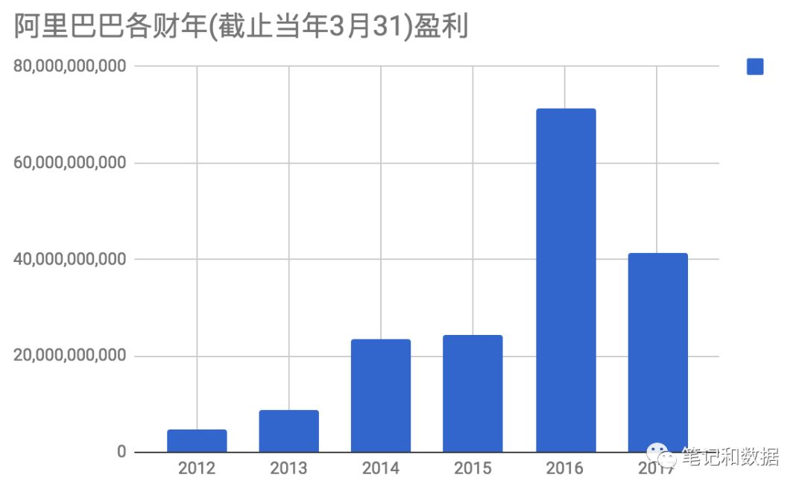

Leetcode 926 Flip String to Monotone Increasing解题笔记
20 October 2018
题目
Leetcode 926. Flip String to Monotone Increasing
https://leetcode.com/problems/flip-string-to-monotone-increasing/description/
1. 输入二进制字符串，就是只有0和1，
2. 如果这个字符串的1（如果有1的话）都在最后面，我们称一个字符串是“monotone increasing”
3. 输入一格二进制字符串，返回最少需要flip多少位就可以让这个字符串变成“monotone increasing”
分析
- 这类最佳问题，通常是需要动态规划。
- 尝试求解递推关系， 假设已经有min[i-1], 如何求得min[i]?
a. 如果当前位是1， 那么min[i] = min[i-1], 因为1在最后面就不需要flip
b. 如果当前位是0， 那么有两种情况，
如果前面取得min[i-1]的时候都是0， 那么min[i] = min[i-1]
如果前面取得min[i-1]的时候最后已经是1了，那么min[i] = min[i-1]+1, 就是最后一位要flip一下
所以min数组只是一维那是不够的，要分min[i][0]和min[i][1], 分别表示在i位最后变成0和1的时候的最小值
所以递推关系如下:
if(S.charAt(i-1) == '1') {
min[i][0] = min[i-1][0] + 1;
min[i][1] = Math.min(min[i-1][1], min[i-1][0]);
}
else { // '0'
min[i][0] = min[i-1][0];
min[i][1] = Math.min(min[i-1][0], min[i-1][1]) + 1;
}
代码
public int minFlipsMonoIncr(String S) {
int[][] min = new int[S.length()][2];
for(int i = 0; i < S.length(); ++i) {
if(S.charAt(i) == '1') {
if(i == 0) {
min[i][0] = 1;
min[i][1] = 0;
}
else {
min[i][0] = min[i-1][0] + 1;
min[i][1] = Math.min(min[i-1][1], min[i-1][0]);
}
}
else { // '0'
if(i == 0) {
min[i][0] = 0;
min[i][1] = 1;
}
else {
min[i][0] = min[i-1][0];
min[i][1] = Math.min(min[i-1][0], min[i-1][1]) + 1;
}
}
}
return Math.min(min[S.length()-1][0], min[S.length()-1][1]);
}
简化代码
实际上，上面的代码，针对i==0的特殊处理，只是只要把数组开大一格，就可以去掉这个特殊处理，因为这个处理就是当前需要flip的情况
public int minFlipsMonoIncr(String S) {
int[][] min = new int[S.length()+1][2];
for(int i = 1; i <= S.length(); ++i) {
if(S.charAt(i-1) == '1') {
min[i][0] = min[i-1][0] + 1;
min[i][1] = Math.min(min[i-1][1], min[i-1][0]);
}
else { // '0'
min[i][0] = min[i-1][0];
min[i][1] = Math.min(min[i-1][0], min[i-1][1]) + 1;
}
}
return Math.min(min[S.length()][0], min[S.length()][1]);
}
时间复杂度
字符串只遍历一次，所以复杂度是O(N)
空间复杂度
设置了一个dp数组，所以需要O(2*N)的复杂度
优化版本的代码
从前面的递推关系可以看到， 每次递推只需要用到min[i-1][0] 和min[i-1][1]，
所以，可以优化空间复杂度到这两个变量
public int minFlipsMonoIncr(String S) {
int flipCountEnd0 = 0, flipCountEnd1 = 0;
for(int i = 0; i < S.length(); ++i) {
if(S.charAt(i) == '1') {
flipCountEnd1 = Math.min(flipCountEnd0, flipCountEnd1);
flipCountEnd0++;
}
else { // '0'
flipCountEnd1 = Math.min(flipCountEnd0, flipCountEnd1) + 1;
}
}
return Math.min(flipCountEnd0, flipCountEnd1);
}
时间复杂度
仍然是O(N)
空间复杂度
O(1)
Leetcode 928. Minimize Malware Spread II解题笔记
20 October 2018
题目
Leetcode 928. Minimize Malware Spread II
https://leetcode.com/problems/minimize-malware-spread-ii/description/
一堆网络节点中有一些initial节点会导致其他相连的节点都被污染, 然后每次从initial中移除节点，并且同时在这个
graph中把这个节点相关的connection也移除掉，求移除那个节点以后被污染的节点最少。
分析
这个和leetcode 924类似 http://www.noteanddata.com/leetcode-924-Minimize-Malware-Spread.html
但是区别是不仅从initial中移除节点， 而且还从graph中把这个节点相关的connection全部移除掉。
“completely removing it and any connections from this node to any other node.”
- 首先可以用一个暴力做法， 就是每次拷贝一个图，然后把要移除的connection去掉，
- 然后在这个图上把initial中的这个节点去掉， 计算有多少个节点被病毒感染(bfs可以计算)
- 比较所有的initial节点的count取最小就可以
这个办法复杂度比较高，我以为肯定不能过的，没想到tle以后，稍微优化一下，还是可以ac的。
代码
public int minMalwareSpread(int[][] graph, int[] initial) {
int minCount = graph.length+1, min = graph.length;
for(int node: initial) {
int[][] ngraph = copy(graph, node);
int count = calcCount(ngraph, initial, node);
if(count < minCount ||(count == minCount && node < min)) {
minCount = count;
min = node;
}
}
return min;
}
public int calcCount(int[][] graph, int[] initial, int remove) {
Set<Integer> set = new HashSet<>();
Queue<Integer> queue = new LinkedList<>();
for(int node: initial) {
if(node != remove) {
queue.add(node);
}
}
while(queue.size() > 0) {
int node = queue.poll();
set.add(node);
for(int i = 0; i < graph.length; ++i) {
if(graph[node][i] == 1 && !set.contains(i) ) {
queue.add(i);
}
}
}
return set.size();
}
public int[][] copy(int[][] graph, int remove) {
int[][] ngraph = new int[graph.length][graph.length];
for(int i = 0; i < graph.length; ++i) {
for(int j = 0;j < graph[i].length; ++j) {
if(i != remove && j != remove && graph[i][j] == 1) {
ngraph[i][j] = 1;
}
}
}
return ngraph;
}
时间复杂度
对于每个initial节点，都有一次graph的拷贝，然后还有一次bfs
O(M*(N*N + N)), 其中M是initial的个数， N是node的个数， 而M<=N,
所以复杂度可以是O(N^3)
空间复杂度
每次需要拷贝一个新的图，然后又需要一个queue和一个set保存已经访问过的节点。
O(NN+2N), 相当于O(N*N)
其他做法
现在这个做法肯定不好，更加优化一点的做法有待后续学习
Leetcode 925 Long Pressed Name解题笔记
20 October 2018
题目
Leetcode 925. Long Pressed Name
https://leetcode.com/problems/long-pressed-name/description/
输入name，然后在键盘上打字， 如果打某个字母的时候按的时间太长，会把一个字母多打几个，这时候仍然判断正确。
输入两个字符串分别代表name和typed， 判断是否是一个正确的type
Input: name = "alex", typed = "aaleex"
Output: true
Explanation: 'a' and 'e' in 'alex' were long pressed.
分析
这个一开始我做错了， 直接建了一个频率表Map<Character, Integer>的map就开始比较判断了。 实际上，这个题目对顺序有要求，
所以必须两个字符串一起遍历，而且，typed里面多出来的字符必须和前面的一样。
代码
public boolean isLongPressedName(String name, String typed) {
int i = 0, j = 0;
while(i < name.length() && j < typed.length()) {
if(name.charAt(i) == typed.charAt(j)) {
i++;
j++;
}
else {
if(j == 0 || typed.charAt(j) != typed.charAt(j-1)) return false;
j++;
}
}
if(i != name.length()) return false;
while(j < typed.length()) {
if(typed.charAt(j) != typed.charAt(j-1)) return false;
j++;
}
return true;
}
时间复杂度
O(Math.max(M, N)), M是name的长度， N是typed的长度
空间复杂度
O(1)
leetcode 2. Add Two Numbers解题笔记
19 October 2018
题目
https://leetcode.com/problems/add-two-numbers/description/
两个链表， 分别存储了两个非负整数， 每个node是一位， 但是链表都是reverse的，就是个位数在最前面，
返回两个数的和，同样用链表表示。
分析
链表已经是个位数在最开头了，所以可以直接从前往后遍历，需要注意的是两个链表可能不一样长。
代码
public ListNode addTwoNumbers(ListNode l1, ListNode l2) {
ListNode root = null, node = null;
int add = 0;
while(l1 != null && l2 != null) {
int v = l1.val + l2.val + add;
if(null == node) {
root = node = new ListNode(v%10);
}
else {
node = node.next = new ListNode(v%10);
}
add = v/10;
l1 = l1.next;
l2 = l2.next;
}
ListNode l = l1 != null ? l1 : l2;
while(null != l) {
int v = l.val + add;
if(null == node) {
root = node = new ListNode(v%10);
}
else {
node = node.next = new ListNode(v%10);
}
add = v/10;
l = l.next;
}
if(add > 0) {
node.next = new ListNode(add);
}
return root;
}
复杂度
时间复杂度
两个链表分别遍历一次，O(M+N)
空间复杂度
结果存储了两个链表中的较大值，O(Math.max(M,N))
其他想法
上面的代码略有繁琐，主要是针对两个链表长度不一样有特殊逻辑，其实可以把两段代码合并起来。
public ListNode addTwoNumbers(ListNode l1, ListNode l2) {
ListNode root = null, node = null;
int add = 0;
while(l1 != null || l2 != null) {
int v1 = l1 != null ? l1.val : 0;
int v2 = l2 != null ? l2.val : 0;
int v = v1 + v2 + add;
if(null == node) {
root = node = new ListNode(v%10);
}
else {
node = node.next = new ListNode(v%10);
}
add = v/10;
l1 = l1 != null ? l1.next : l1;
l2 = l2 != null ? l2.next : l2;
}
if(add > 0) {
node.next = new ListNode(add);
}
return root;
}
Leetcode 920. Number of Music Playlists 解题笔记
18 October 2018
题目
Leetcode 920. Number of Music Playlists
https://leetcode.com/problems/number-of-music-playlists/description/
- 音乐播放器，总共有N首不同的歌曲，有L个位置（就是总共在这N首歌里面循环放了L首），
- 要求每首歌至少放一次，然后一首歌要想重复放，必须要有K首其他歌放过了才可以再放
分析
这个优化问题，求最多的可能性，需要用动态规划做，
这里有三个变量， 状态比较复杂，但是可以固定N，始终在N首曲子里面选择。
设置动态规划数组dp[i][j], 表示第i个位置，在N首歌曲里面，放了j首不同的歌曲的个数， 并且符合K的条件
那么dp[L][N]就是有L个位置，放了N首不同的歌曲的结果。
那么，寻找递归关系， 对于dp[i][j], 递归关系一定是寻找和i-1的关系， 因为第i个位置还没有放歌曲，
这时候，有两种情况，
a. 如果第i首曲子是之前没有放过的，那前一项就应该是dp[i-1][j-1], 然后这个时候可以选择的曲子是
N-(j-1), 所以那么这时候的可能性是dp[i-1][j-1] * (N-(j-1))
b. 如果第i首曲子是之前放过的，那么前一项就是dp[i-1][j], 这时候可以选择的曲子的范围是多少呢？
因为要符合K的要求，那最近的这K个就不能选择了，所以是j-K个， 当然因为j-K有可能小于0， 所以要取Math.max(j-K, 0)
c. 对于b的情况这里可能会有个疑问，是不是最近这K个不选了以后一定是对的？有没有可能j-K前面的若干个里面会和最近的K个有冲突？
我当时就有这个疑问，其实是这样， 对于dp[i-1][j]
其实是这样， 这里最近的这K个曲子，因为已经符合要求了，所以最近的这K个曲子就一定是不重复的。
然后这里选择的是j-K, 而不是i-K,
所以是j首不同的曲子里面，去掉K首最近被用过的（一定是不重复的），这样剩下的曲子一定不会在最近的K个位置里面有冲突。
d. 综合a和b两种情况， 得出递推公式：
dp[i][j] = dp[i-1][j] * Math.max(j-K, 0) + dp[i-1][j-1] * (N-j+1)
e. 边界条件
这里主要的边界条件是i=1和j=1的情况，
if i < j, dp[i][j] = 0, 因为只有i个位置， 但是要放j首不同的曲子， 这个肯定不可能。
dp[1][1] = N, 因为1个位置， 从N首不同的曲子里面选择1首曲子， 那就有N种可能。
if i > 1 && j ==1
这时候分两种情况， 如果K=0， 那么就是在N首曲子里面选一首，然后填满i个位置，就有N个选择，
如果K > 0, dp[i][1] = 0， 因为只有一首曲子，但是要符合K的条件，已经不可能了。
代码
public int numMusicPlaylists(int N, int L, int K) {
long[][] dp = new long[L+1][N+1];
for(int i = 1; i < L+1; ++i) {
for(int j = 1;j < N+1; ++j) {
if(i < j) dp[i][j] = 0;
else if(i == 1 && j == 1) dp[i][j] = N;
else if(i > 1 && j == 1) {
if(K == 0) dp[i][j] = N;
else dp[i][j] = 0;
}
else {
dp[i][j] = dp[i-1][j-1] * (N-j+1) + dp[i-1][j] * Math.max(j-K, 0);
dp[i][j] %= 1_000_000_007;
}
}
}
return (int)dp[L][N];
}
复杂度
时间复杂度
O(L*N)
空间复杂度
O(L*N)
其他解
官方解里面的边界条件非常简单，直接设置了dp[0][0] = 1以后就开始dp了， 这个我没有搞明白为什么设置这个值，为什么这个值设了以后就可以递归了，所以就没有按照这个来。
一些sample表格
case 1
N=3， L=3， K=1
0,0,0,0
0,3,0,0
0,0,6,0
0,0,6,6
case 2
N=2, L=3, K=0
0 0 0
0 2 0
0 2 2
0 2 6
代码2
实际上，后面测试了一些，只要设置了dp[1][1] = N以后，就可以直接进入递推模式了，
dp[i][1] 和dp[1][j] 就已经在递推中完全完成了。
因为所有的dp[0][j] = 0, 所以对于j > 1, 所有的dp[1][j] = 0
而对dp[i][1], 也就是j= 1, 如果i > 1的话， 因为dp[i-1][0] 都是0，
而如果K = 0, Math.max(j-K, 0)= 1, 所以dp[i][1] = N,
如果K >= 1, Math.max(j-K, 0) = 0,所以整个递推关系是完全成立的。
public int numMusicPlaylists(int N, int L, int K) {
long[][] dp = new long[L+1][N+1];
for(int i = 1; i < L+1; ++i) {
for(int j = 1;j < N+1; ++j) {
if(i == 1 && j == 1) {
dp[i][j] = N;
}
else {
dp[i][j] = dp[i-1][j-1] * (N-j+1) + dp[i-1][j] * Math.max(j-K, 0);
dp[i][j] %= 1_000_000_007;
}
}
}
return (int)dp[L][N];
}
leetcode 909 910. Smallest Range II解题笔记
16 October 2018
题目
Leetcode 910. Smallest Range II
https://leetcode.com/problems/smallest-range-ii/description/
输入一个整数数组A，对每个元素A[i], 可以选择B[i] = A[i] + K 或者 B[i] = A[i] - K
求处理后的数组B的最大值最小值的差的最小结果。
分析
这是smallest range I的升级版， 现在值只有两个选项，要么是+K, 要么是-K
http://www.noteanddata.com/leetcode-908-Smallest-Range-I.html
- 因为每个数可以+K, 也可以-K, 所以简单的取原来的最大最小值处理是不可以的。
- 首先一种特殊情况是所有的数都选择同一个方向, 这时候的结果是min-min
- 如果因为需要选择不同的方向，可以将整体都先选择-K, 然后逐个对A[i]改成+K
对于任何一个A[i], 如果选择了+K, 那么:
a. 任何一个比A[i]大的数，都应该选择-K。因为如果选择+K的话， 那么距离会越来越大，或者说， 选择+K后整体的最大值可能会变大， 相比-K的解一定不是最优的。
b. 对于任何一个A[i]小的数，都应该选择+K。 因为如果选择-K的话，整体的最小值会变小，和相比+K的解一定不是最优的。 -
如果这样的话， 那么先对数组进行排序，假设所有的都是-K， 然后逐个选择+K, 因为比A[i]小的都选择+K, 比A[i]大的都选择-K,
所以，一次遍历过去，每次取到当前都最大值和最小值，然后可以算出最后需要求的结果。
代码
public int smallestRangeII(int[] a, int K) {
Arrays.sort(a);
int ret = a[a.length-1] - a[0];
for(int i = 0; i < a.length-1; ++i) {
int max = Math.max(a[i] + K, a[a.length-1]-K);
int min = Math.min(a[i+1] - K, a[0] + K);
ret = Math.min(ret, max-min);
}
return ret;
}
leetcode 911 Online Election解题笔记
16 October 2018
题目
Leetcode 911. Online Election
https://leetcode.com/problems/online-election/description/
先输入两个同样长度的整数数组，分别代表时间(time)和人物(person), {time[i], person[i]}表示在time[i]投票给person[i]
然后对任意一个时间， 返回当前时间谁的票数最多。
下面是一个例子：
Input: ["TopVotedCandidate","q","q","q","q","q","q"], [[[0,1,1,0,0,1,0],[0,5,10,15,20,25,30]],[3],[12],[25],[15],[24],[8]]
Output: [null,0,1,1,0,0,1]
Explanation:
At time 3, the votes are [0], and 0 is leading.
At time 12, the votes are [0,1,1], and 1 is leading.
At time 25, the votes are [0,1,1,0,0,1], and 1 is leading (as ties go to the most recent vote.)
This continues for 3 more queries at time 15, 24, and 8.
note:
Note:
1 <= persons.length = times.length <= 5000
0 <= persons[i] <= persons.length
times is a strictly increasing array with all elements in [0, 10^9].
TopVotedCandidate.q is called at most 10000 times per test case.
TopVotedCandidate.q(int t) is always called with t >= times[0].
分析
- 对于输入来说，在任意一个时间，领先者都是固定的， 所以可以建立一个表格，存储当前领先的人。
- 对于查询来说，主要需要处理的问题是投票时间是不连续的，但是查询的时间是在任意一个时刻，但是我们建表格肯定不能对每个时间都存储一个值，
这样内存就会爆。 - 但是查询可以用二分来查询， 或者treemap有一个floor的函数, 可以返回map中<=某个参数key的最大key， 就是当前时间的lead
- 这个题目leetcode的运行时间很不稳定，无论是binarysearch还是treemap的做法，都会出现有时候可以ac有时候tle的情况
binary search 代码
二分查询代码如下，
1. 首先是建立一个countTable, 相当于Map<Person, VoteCount>
2. 然后在遍历到每个位置的时候，可以保持更新leading person，
3. 针对每个i，知道leadingPerson, 那就可以建立一个i->leadingPerson的表格
4. 保存times表格，然后针对查询t， 二分查找到对应的index， 然后返回对应的值就好，
这里直接用了Arrays.binarySearch, 如果存在正好的值就返回index， 如果不存在，那返回的是-insertionplace-1
至于为什么api会这么返回呢？我猜比如insertion place=0， 这样可以返回-1， 不至于返回0，导致结果出现重叠。
这里， 需要的是insertionplace-1, 所以返回-index-2.
// 当然，题目已经限定了查询的 t >= times[0]， 否则的话用-index-2会抛异常
class TopVotedCandidate {
private int[] leadingTable;
private int[] times;
public TopVotedCandidate(int[] persons, int[] times) {
this.times = times;
int leadingPerson = 0;
int[] countTable = new int[persons.length];
leadingTable = new int[times.length];
for(int i = 0; i < times.length; ++i) {
countTable[persons[i]]++;
if(countTable[persons[i]] >= countTable[leadingPerson]) {
leadingPerson = persons[i];
}
leadingTable[i] = leadingPerson;
}
}
public int q(int time) {
int index = Arrays.binarySearch(times, time);
if(index >= 0) return leadingTable[index];
else return leadingTable[-index-2];
}
}
时间复杂度
建立表格的复杂度是O(N), 查询的复杂度是O(logN)
空间复杂度
需要两个表格保存leadingtable和times， 相当于O(2*N)
TreeMap 代码
class TopVotedCandidate {
private TreeMap<Integer, Integer> leadingPersonMap; // from time[i]-->leadingperosn
private int[] times;
public TopVotedCandidate(int[] persons, int[] times) {
this.times = times;
int leadingPerson = 0;
int[] countTable = new int[persons.length];
leadingPersonMap = new TreeMap<>();
for(int i = 0; i < times.length; ++i) {
countTable[persons[i]]++;
if(countTable[persons[i]] >= countTable[leadingPerson]) {
leadingPerson = persons[i];
}
leadingPersonMap.put(times[i], leadingPerson);
}
}
public int q(int time) {
return leadingPersonMap.floorEntry(time).getValue();
}
}
时间复杂度
建立表格的复杂度是O(N*logN), 因为treemap的insert是logN
查询的复杂度是O(logN)
空间复杂度
O(2*N)
leetcode 916. Word Subsets解题笔记
15 October 2018
题目
leetcode 916. Word Subsets
https://leetcode.com/problems/word-subsets/description/
- 输入两个数组A和B，数组里面的元素都是小写的英文字符串，
- 如果一个字符串b里面的所有字符都在另外一个字符串a里面出现，并且考虑到个数的话，那么定义b是a的子集
- 如果对于数组A里面的一个字符串a，数组B里面的所有字符串都是a的子集，那么定义这个字符串是universal的， 也就是我们要找的字符串
- 返回数组A里面所有的universal的字符串
Note:
1 <= A.length, B.length <= 10000
1 <= A[i].length, B[i].length <= 10
A[i] and B[i] consist only of lowercase letters.
All words in A[i] are unique: there isn't i != j with A[i] == A[j].
分析
- 最简单的做法就是暴力法，对B里面的每个字符串都建立一个hashmap，从letter->count, 然后和A里面的字符串做对比, 我一开始
也是这么做的，代码在最后，结果当然是TLE， 时间复杂度太高了, 主要是里面是至少M*N的复杂度，还要乘上字符串长度 - 然后再分析一下这个，需要数组B里面的所有字符串都是a的子集，那么，其实数组B里面的字符串可以取union，找到针对26个字符里面每个字符
的最大次数，就是A里面的字符串需要比较的对象， 这样的话，只要先建立这个表格，然后对A里面的字符串和这个表格做比较就好了，复杂度就小很多。
代码1
这是当时写的一个版本，代码本身不是特别简洁， 但是复杂度是符合要求的。代码不是太简洁的原因是之前写的版本TLE了以后，
这里多做了一点点小小的没有必要的自以为的优化，对于A里面的字符串，如果已经找到B的全集表以后，直接就返回了，不继续遍历。
实际上, 1 <= A[i].length, B[i].length <= 10, 这些处理都是没有必要的。
public List<String> wordSubsets(String[] A, String[] B) {
int[] table = processB(B);
List<String> ret = new ArrayList<>();
for(String s: A) {
if(valid(s, table)) {
ret.add(s);
}
}
return ret;
}
public int[] processB(String[] B) {
int[] total = new int[27];
for(String s: B) {
int[] onetable = new int[26];
for(int i = 0; i < s.length(); ++i) {
int index = (int)(s.charAt(i) - 'a');
onetable[index]++;
}
for(int i = 0; i < 26; ++i) {
total[i] = Math.max(total[i], onetable[i]);
}
}
int count = 0;
for(int i = 0; i < 26; ++i) {
if(total[i] > 0) {
count++;
}
}
total[26] = count;
return total;
}
public boolean valid(String s, int[] table) {
int matchCount = 0;
int[] ntable = new int[26];
for(int i = 0; i < s.length(); ++i) {
char ch = s.charAt(i);
int index = (int)(ch - 'a');
if(table[index] > 0) {
ntable[index]++;
if(ntable[index] == table[index]) {
matchCount++;
if(matchCount == table[26]) {
return true;
}
}
}
}
return false;
}
复杂度
- 时间复杂度
a. 对数组B建表的复杂度是O(MP), 其中M是数组B的大小， P是数组B里面元素的平均长度
b. 然后数组A里面比较的部分复杂度是O(N(Q + 26)), 其中N是数组A的大小, Q是数组A的元素的平均长度
所以整体复杂度是O(MP + N (26+Q)), 和最原始的想法相比大大降低了复杂度 - 空间复杂度
每次都是建了一个26大小的数组，相当于常量, 所以空间复杂度是O(1)
简洁一点的代码2
实际上，只要我们把复杂度降下来了以后，直接建表然后逐个比较就好，不需要做太多额外条件判断。下面是后续写的版本
public List<String> wordSubsets(String[] A, String[] B) {
int[] totalB = new int[26];
for(String s: B) {
int[] table = buildTable(s);
for(int i = 0; i < 26; ++i) {
totalB[i] = Math.max(totalB[i], table[i]);
}
}
List<String> allList = new ArrayList<>();
for(String s: A) {
int[] table = buildTable(s);
int i = 0;
for(; i < 26; i++) {
if(table[i] < totalB[i]) {
break;
}
}
if(i == 26) {
allList.add(s);
}
}
return allList;
}
public int[] buildTable(String s) {
int[] table = new int[26];
for(int i = 0; i < s.length(); ++i) {
table[(int)(s.charAt(i) - 'a')]++;
}
return table;
}
- 时间复杂度
a. 对数组B建表的复杂度是O(MP), 其中M是数组B的大小， P是数组B里面元素的平均长度
b. 然后数组A里面比较的部分复杂度是O(N(Q + 26)), 其中N是数组A的大小, Q是数组A的元素的平均长度
所以整体复杂度是O(MP + N (26+Q)), 和最原始的想法相比大大降低了复杂度 - 空间复杂度
每次都是建了一个26大小的数组，相当于常量, 所以空间复杂度是O(1)
TLE的代码3
一开始没有考虑复杂度，直接brute force，结果就TLE了。
代码如下， 主要是对每个B里面的字符串都进行了建table， 然后对每个A里面的字符串都和每个B里面的字符串做比较，
- 第一次建B的表格是O(M*P), 其中M是数组B的大小， P是数组B里面元素的平均长度
- 第二次两层循环的复杂度是O(NM26*Q), 其中N是数组A的大小, M是数组B的大小，Q是数组A的元素的平均长度
时间复杂度太高，后来虽然对重复数组做了一些剔除等小细节的优化，仍然不解决问题。
主要原因是这里对于A里面的每个元素，都需要和B里面都每个字符串做比较，有N*M在复杂度里面，对于1 <= A.length, B.length <= 10000，
那就是至少一亿次起步了。
public List<String> wordSubsets(String[] A, String[] B) {
List<Map<Character, Integer>> list = new ArrayList<>();
for(String s: B) {
list.add(calcCount(s));
}
List<String> ret = new ArrayList<>();
for(String s: A) {
boolean allvalid = true;
for(Map<Character, Integer> map: list) {
if(!valid(s, map)) {
allvalid = false;
break;
}
}
if(allvalid) {
ret.add(s);
}
}
return ret;
}
public boolean valid(String s, Map<Character, Integer> map) {
int matchCount = 0;
Map<Character, Integer> cmap = new HashMap<>();
for(int i = 0; i < s.length(); ++i) {
char ch = s.charAt(i);
Integer c = map.get(ch);
if(null != c) {
int count = cmap.getOrDefault(ch, 0);
cmap.put(ch, count+1);
if(count+1 == c) {
matchCount++;
if(matchCount == map.size()) {
return true;
}
}
}
}
return false;
}
public Map<Character, Integer> calcCount(String s) {
Map<Character, Integer> map = new HashMap<>();
for(int i = 0; i < s.length(); ++i) {
char ch = s.charAt(i);
int count = map.getOrDefault(ch, 0);
map.put(ch, count+1);
}
return map;
}
leetcode 1 two sum解题笔记
14 October 2018
题目
leetcode 1， two sum
https://leetcode.com/problems/two-sum/description/
输入一个数组和一个target，返回两个index， 使得nums[index0] + nums[index1] = target
题目保证输入的值一定有且仅有一个解，而且同一个元素不能被重复利用
分析
- 如果数组已经排序，那么找target可以从头尾两个index开始往中间找。
- 或者如果对每个nums[i]->i的index，那么也可以对每个nums[i]找target-nums[i]。
- 注意输入一定有且仅有一个解，另外同一个元素不能重复利用， 而且数组中有可能会有相同的元素在不同的index，
对于相同元素的处理，无论采用那种做法，都是需要注意的细节。
hashmap的解法
思路
- 可以通过一个map来保存每个数字出现的index，然后对每个nums[i], 可以看target-nums[i]是否存在
- 需要注意的两个地方是：
a. 数字可能会有重复，需要用一个set来保存每个数字对应的index
b. 不能把自己算进去，比如[3,3,7], 不能返回[0,0], 需要返回[0,1]
代码
public int[] twoSum(int[] nums, int target) {
Map<Integer, Set<Integer>> map = new HashMap<>();
for(int i = 0; i < nums.length; ++i) {
map.computeIfAbsent(nums[i], k->new HashSet<>()).add(i);
}
for(int i = 0; i < nums.length; ++i) {
Set<Integer> set = map.get(target-nums[i]);
if(null != set) {
for(int n: set) {
if(n != i) {
return new int[]{i, n};
}
}
}
}
return null;
}
复杂度
时间复杂度
数组遍历一次，复杂度是O(N)
空间复杂度
需要一个map保存所有数字的index，复杂度也是O(N)
双指针的解法
思路
如果将数组排序，那么用头尾两个指针来求target就比较简单。
但是需要返回原来的index，所以需要先找到这两个数以后，然后再在原来的数组里面找到这两个值对应的index。
同时，由于原来的数组里面的值会有重复值，所以找对应的值的情况也略有点tricky，需要找到不同的index，同时第一个index设置了以后不能在override
代码
public int[] twoSum(int[] nums, int target) {
int[] original = Arrays.copyOf(nums, nums.length);
Arrays.sort(nums);
int begin = 0, end = nums.length-1;
while(begin < end) {
if(nums[begin] + nums[end] == target) {
break;
}
else if(nums[begin] + nums[end] > target) {
end--;
}
else {
begin++;
}
}
int index0 = -1, index1 = -1;
for(int i = 0; i < original.length; ++i) {
if(original[i] == nums[begin] && index0 < 0) {
index0 = i;
}
if(original[i] == nums[end] && i != index0) {
index1 = i;
}
if(index0 >= 0 && index1 >= 0) {
break;
}
}
return new int[]{index0, index1};
}
复杂度
时间复杂度
- 数组被排序一次， O(N * logN),
- 然后再遍历一次, O(N)
所以总的复杂度是O(N * logN)
空间复杂度
因为需要返回原来的数组index，所以需要拷贝一份数组才可以返回原来的index， 所以空间复杂度是O(N)
leetcode 15 three sum解题笔记
14 October 2018
题目
leetcode 第15题， 3 sum解题笔记
https://leetcode.com/problems/3sum/description/
输入一个整数数组，要求返回所有的unique的[a,b,c], 使得a+b+c=0, 其中a,b,c是数组里面的元素
分析
在leetcode的two sum 里面，主要有两种解法，一种是hashmap，一种是排序一样用双指针
http://www.noteanddata.com/leetcode-1-two-sum-solution-notes.html
现在变成3-sum，但是同样的思路仍然可以应用的。可以用hashmap保存每个数出现的次数，也可以排序以后用双指针。
同样的，这个题目主要要处理的一些tricky的数据就是数据一样的情况， 比如[a,a,a], [a,a,b],
无论在排序还是在hashmap的情况下，都需要对这些情况做对应的处理，否则不能返回符合所有的unique的[a,b,c]的情况
HashMap代码
public List<List<Integer>> threeSum(int[] nums) {
Map<Integer, Integer> countMap = new HashMap<>();
for(int n : nums) {
countMap.put(n, countMap.getOrDefault(n, 0)+1);
}
List<List<Integer>> allList = new ArrayList<>();
for(Map.Entry<Integer, Integer> entry: countMap.entrySet()) {
int v0 = entry.getKey();
int count0 = entry.getValue();
if(count0 >= 3) {
if(v0 == 0) {
allList.add(Arrays.asList(0,0,0));
}
}
if(count0 >= 2) {
int v2 = 0 - v0 * 2;
if(v2 != v0) {
if(countMap.get(v2) != null) {
allList.add(Arrays.asList(v0,v0, v2));
}
}
}
for(int v1: countMap.keySet()) {
int v2 = 0 - v1 - v0;
if(v1 <= v0 || v2 <= v1 || countMap.get(v2) == null) continue;
allList.add(Arrays.asList(v0, v1, v2));
}
}
return allList;
}
复杂度
时间复杂度
建立hashmap和遍历部分都是O(N), 所以是O(N)
空间复杂度
O(N), 因为hashmap最大可能会和数组一样大
排序+双指针代码
public List<List<Integer>> threeSum(int[] nums) {
Arrays.sort(nums);
List<List<Integer>> allList = new ArrayList<>();
for(int i = 0; i < nums.length; ) {
int begin = i+1, end = nums.length-1;
while(begin < end) {
if(nums[begin] + nums[end] == 0 - nums[i]) {
allList.add(Arrays.asList(nums[i], nums[begin], nums[end]));
begin++;
while(nums[begin] == nums[begin-1] && begin < end) {
begin++;
}
end--;
while(nums[end] == nums[end+1] && begin < end) {
end--;
}
}
else if(nums[begin] + nums[end] < 0 - nums[i]) {
begin++;
}
else {
end--;
}
}
i++;
while(i < nums.length && nums[i] == nums[i-1]) {
i++;
}
}
return allList;
}
复杂度
时间复杂度
排序部分是O(N*logN), 遍历的部分是O(N^2), 所以整体复杂度是O(N^2)
空间复杂度
只使用了一些常量，所以是O(1)
Leetcode Leetcode 923-3Sum With Multiplicity 解题笔记
14 October 2018
题目
Leetcode 923-3Sum With Multiplicity
https://leetcode.com/problems/3sum-with-multiplicity/description/
输入一个整数数组A, 和一个target， 要求返回A[i] + A[j] + A[k]=target的个数，其中i，j，k不相等。
例子中的一些数据已经表明这个数组里面会有重复的元素
Input: A = [1,1,2,2,3,3,4,4,5,5], target = 8
Output: 20
Explanation:
Enumerating by the values (A[i], A[j], A[k]):
(1, 2, 5) occurs 8 times;
(1, 3, 4) occurs 8 times;
(2, 2, 4) occurs 2 times;
(2, 3, 3) occurs 2 times.
分析
类似的题目有leetcode 1–two sum ， http://www.noteanddata.com/leetcode-1-two-sum-solution-notes.html
leetcode 15–threesum, http://www.noteanddata.com/leetcode-15-3Sum-Solution-notes.html
这两题里面都提到hashmap法和双指针法，
这里也可以用hashmap法，把每个数字出现的次数记录下来， 然后把三种不同的情况的可能性都加起来就好
1. a+a+a=target, 其中数字a出现至少3次， 这里就是组合公式counta * (counta-1) * (counta-2)/6,
2. a+a+b=target, 其中， 数字a至少出现2次， 这里就是组合公式 counta * (counta-1) / 2 * countb
c. a+b+c=target, 那么就是countacountbcountc, 这里记得去重， 我刚开始做的时候， 去重的版本写的非常复杂（见最后），
后来整理思路了以后，其实只要遍历的过程保证a<b<c就好了，
代码
public int threeSumMulti(int[] A, int target) {
Map<Integer, Integer> countMap = new HashMap<>();
for(int i = 0; i < A.length; ++i) {
countMap.put(A[i], countMap.getOrDefault(A[i], 0) + 1);
}
long ret = 0;
Set<Integer> fvisited = new HashSet<>();
for(int v: countMap.keySet()) {
int count = countMap.get(v);
if(target == v * 3) {
if(count >= 3) {
ret += ((long)count) * (count-1) * (count-2)/6;
}
}
else {
if(count >= 2) {
ret += ((long)count) * (count-1)/2 * countMap.getOrDefault(target - 2 * v, 0);
}
}
for(int v2: countMap.keySet()) {
int v3 = target -v -v2;
if(v2 <= v || v3 <= v2) continue;
ret += ((long)count) * countMap.get(v2) * countMap.getOrDefault(v3, 0);
}
}
return (int)(ret%1000000007);
}
时间复杂度
O(K^2), 其中K是unique的数字的个数， 这里题目中已经限制了100了。
空间复杂度
O(K), K是unique的数字的个数
随想
上面这个代码是后续整理的，其实一开始的版本虽然思路是略有类似，但是细节上对数据相同的情况和如何去重的判断并不是很清晰，导致代码比较
冗余，而且当时也调试了很久才ac， 下面是刚开始的版本，只是做一个记录。由于代码过于冗余，一般不需要看.
public int threeSumMulti(int[] A, int target) {
Map<Integer, Long> countMap = new HashMap<>();
for(int i = 0; i < A.length; ++i) {
countMap.put(A[i], countMap.getOrDefault(A[i], 0L) + 1);
}
long ret = 0;
Set<Integer> fvisited = new HashSet<>();
for(int v: countMap.keySet()) {
long count = countMap.get(v);
ret += count * twoSumCount(countMap, v, target-v, fvisited);
if(count > 1) {
if(target - v * 2 != v) {
long combine = count * (count - 1) / 2;
long thirdCount = countMap.getOrDefault(target - v * 2, 0L);
ret += combine * thirdCount;
}
else {
if(count > 2) {
long combine = count * (count - 1) * (count - 2) / 6;
ret += combine;
}
}
}
fvisited.add(v);
}
long mod = (long)Math.pow(10, 9) + 7;
return (int)(ret%mod);
}
public long twoSumCount(Map<Integer, Long> countMap, int exclude, int target, Set<Integer> fvisited) {
int ret = 0;
Set<Integer> visited = new HashSet<>();
for(int v: countMap.keySet()) {
if(fvisited.contains(v) || fvisited.contains(target-v) || visited.contains(target-v) || visited.contains(v) || exclude == v || exclude == target-v || (target-v == v) ) continue;
long count = countMap.get(v);
long count2 = countMap.getOrDefault(target-v, 0L);
visited.add(v);
visited.add(target-v);
ret += count * count2;
}
return ret;
}
leetcode 921 Minimum Add to Make Parentheses Valid解题笔记
13 October 2018
题目
leetcode 921 Minimum Add to Make Parentheses Valid
https://leetcode.com/problems/minimum-add-to-make-parentheses-valid/description/
输入一个只有左括号和右括号的字符串，返回需要最少添加多少个括号可以让这个字符串变成一个正常闭合的字符串，
所谓正常闭合就是左右括号可以对应， 其中添加的括号可以是左括号，也可以是右括号。
分析
首先想到的是能不能直接遍历一下字符串，然后返回Math.abs(leftcount-rightcount),
但是看到"))(("这样的case显然不能通过，所以在遍历的过程中，如果右括号不能被匹配，那么就直接需要计数了。
也就是常规的用stack的思路，如果遇到左括号就push，遇到右括号就pop。 但是如果遇到右括号的时候stack是空的，那就要计数了。
还有最后剩下的左括号个数也需要加上。
由于这里只需要返回个数，所以不需要用stack，直接用两个count就好。
代码
public int minAddToMakeValid(String S) {
int leftcount = 0, missingleft = 0;
for(int i = 0; i < S.length(); ++i) {
if('(' == S.charAt(i)) {
leftcount++;
}
else {
leftcount--;
if(leftcount < 0) {
missingleft++;
leftcount = 0;
}
}
}
return leftcount + missingleft;
}
复杂度
时间复杂度
遍历一次，O(N)
空间复杂度
只需要两个常量，O(1)
leetcode 914 X of a Kind in a Deck of Cards解题笔记
13 October 2018
题目
leetcode 914. X of a Kind in a Deck of Cards
https://leetcode.com/problems/x-of-a-kind-in-a-deck-of-cards/description/
输入一个整数的数组，要求将这些整数分成1个或多个组，并且符合下面两个条件：
a. 每组的数字个数相同，并且至少有两个
b. 每组内部是同一个数字
求对应输入是否能完成这样的分组
Input: [1,2,3,4,4,3,2,1]
Output: true
Explanation: Possible partition [1,1],[2,2],[3,3],[4,4]
Input: [1,1,1,2,2,2,3,3]
Output: false
Explanation: No possible partition.
解题分析
- 首先看第二个条件，每组内的数字相同， 那么首先要算出每个数字出现多少次(频率)
- 然后如果最小的频率如果是1的话，那一定是不能完成分组的
- 取其中一个频率，然后取这个数的所有>=2的因子，如果存在其中一个因子是其他所有频率的因子的话，那可以完成分组
代码
public boolean hasGroupsSizeX(int[] deck) {
Map<Integer, Integer> countMap = new HashMap<>();
for(int i = 0; i < deck.length; ++i) {
countMap.put(deck[i], countMap.getOrDefault(deck[i], 0)+1);
}
int min = Integer.MAX_VALUE;
for(int n : countMap.values()) {
min = Math.min(min, n);
}
if(min == 1) return false;
List<Integer> factorList = new ArrayList<>();
for(int i = 2; i <= min; ++i) {
if(min%i == 0) {
factorList.add(i);
}
}
for(int factor: factorList) {
boolean valid = true;
for(int n: countMap.values()) {
if(n%factor != 0) {
valid = false;
break;
}
}
if(valid) {
return true;
}
}
return false;
}
Leetcode 922 Sort Array By Parity II 解题笔记
13 October 2018
题目
Leetcode 922 Sort Array By Parity II
https://leetcode.com/problems/sort-array-by-parity-ii/description/
输入一个数组，一半是奇数，一半是偶数，要求将数组重新排序，使得在奇数index上的数是奇数，偶数index上的数是偶数
分析
可以开一个新数组，维护两个index，分别用来表示存下一个奇数和偶数的位置，然后依次前进就好
代码
public int[] sortArrayByParityII(int[] A) {
int[] ret = new int[A.length];
int oindex = 1, eindex = 0;
for(int i = 0; i < A.length; ++i) {
if(A[i]%2 == 0) {
ret[eindex] = A[i];
eindex += 2;
}
else {
ret[oindex] = A[i];
oindex += 2;
}
}
return ret;
}
复杂度
时间复杂度
O(N)
空间复杂度
开了一个新数组，O(N)
其他思路
看到其他人的思路有直接in place修改原来的数组了，在空间复杂度上变成了O(1), 后续可以再思考一下
leetcode 915. Partition Array into Disjoint Intervals解题笔记
13 October 2018
题目
https://leetcode.com/problems/partition-array-into-disjoint-intervals/description/
对于一个数组，找到一个位置把数组分成左右两部分，
1. 使得左边的所有数都<=右边的所有数
2. 左边和右边都不是空的
3. 左边的数组长度最小
分析
- 对于第一个条件，对任意一个位置i，需要知道max(a[0]….a[i]) 和min(a[i+1]…a[N-1])，
如果max(a[0]….a[i]) <= min(a[i+1]…a[N-1]), 那么这个分法就是一个符合第一个要求的分法， - 所以问题就转换成如何构造max(a[0]….a[i])和min(a[i+1]…a[N-1]),
对于max(a[0]….a[i])， 从左向右遍历一遍就可以建立这样一个leftmax的表格
同理，对于min(a[i+1]…a[N-1])， 从右向左遍历一遍就可以建立这样一个rightmin的表格 - 然后再遍历一次，找到第一个leftmax[i] <= right[i+1]的位置，就是符合要求的位置
代码
public int partitionDisjoint(int[] A) {
int[] leftmax = new int[A.length];
int[] rightmin = new int[A.length];
for(int i = 0; i < A.length; ++i) {
if(i == 0) {
leftmax[i] = A[i];
}
else {
leftmax[i] = Math.max(leftmax[i-1], A[i]);
}
}
for(int i = A.length-1; i >= 0; --i) {
if(i == A.length-1) {
rightmin[i] = A[i];
}
else {
rightmin[i] = Math.min(rightmin[i+1], A[i]);
}
}
for(int i = 0; i < A.length-1; ++i) {
if(leftmax[i] <= rightmin[i+1]) {
return i+1;
}
}
return -1;
}
复杂度
时间复杂度
O(N)
空间复杂度
O(N)
其他解法
后续看到有人只遍历数组一遍就解了这个题目，只能叹为观止！
leetcode 924 Minimize Malware Spread 解题笔记
13 October 2018
题目
leetcode 924, Minimize Malware Spread
https://leetcode.com/problems/minimize-malware-spread/description/
1. 给定一个用图表示的网络，如果graph[i][j] = 1, 说明节点i和j之间有连接
2. 如果一个节点被病毒感染，所有和这个节点有连接的节点都会被病毒感染，并且会不断扩散
3. 输入一个初始节点数组，表示已经感染病毒的节点
问题，假如从初始节点中删除一个节点，选择哪个节点会使得最后已感染病毒的节点最少？
分析
- 对于初始节点中的每一个节点，可以通过bfs遍历得到能够访问到的所有节点
- 对于这些节点，可以得到一个Map<Integer, Integer>, 就是从节点(node)到个数(count)的映射，其中这里所有的个数都相同
- 对于初始节点中的任何一个， 如果对应map中的count是最大的，那么，删除这个节点最后感染病毒的节点就是最少的，也就是我们需要返回的那个节点
代码
public int minMalwareSpread(int[][] graph, int[] initial) {
Map<Integer, Integer> countMap = new HashMap<>();
for(int v: initial) {
if(!countMap.containsKey(v)) {
countMap.putAll(calcImpacted(graph, v));
}
}
Set<Integer> set = new HashSet<>();
for(int v: initial) {
set.add(v);
}
int maxCount = -1, retv = 0;
for(Map.Entry<Integer, Integer> entry: countMap.entrySet()) {
if(!set.contains(entry.getKey())) continue;
if(entry.getValue() > maxCount) {
retv = entry.getKey();
maxCount = entry.getValue();
}
else if(entry.getValue() == maxCount && entry.getKey() < retv) {
retv = entry.getKey();
}
}
return retv;
}
public Map<Integer, Integer> calcImpacted(int[][] graph, int initial) {
Queue<Integer> queue = new LinkedList<>();
queue.add(initial);
Set<Integer> set = new HashSet<Integer>();
while(queue.size() > 0) {
int v = queue.poll();
set.add(v);
for(int j = 0; j < graph.length; ++j) {
if(graph[v][j] == 1 && !set.contains(j)) {
queue.add(j);
}
}
}
Map<Integer, Integer> countMap = new HashMap<Integer,Integer>();
for(int v: set) {
countMap.put(v, set.size());
}
return countMap;
}
复杂度分析
时间复杂度
空间复杂度
Leetcode 919 Complete Binary Tree Inserter 解题笔记
12 October 2018
Leetcode 919 Complete Binary Tree Inserter 解题笔记
题目
https://leetcode.com/problems/complete-binary-tree-inserter/description/
对于一个二叉完全树(complete binary tree), 要求可以完成以下操作，
1. 初始化
public CBTInserter(TreeNode root)
2. 插入一个新节点，仍然保持这个树是二叉完全树， 同时返回新节点的父节点的值
public int insert(int v)
3. 返回树的根节点
public TreeNode get_root()
所谓二叉完全树，是指如果一个树的高度是n, 那么从1到n-1的层都是满的， 然后最后一层(n层)的所有节点都在最左边， 空的都在最右边，没有出现穿插的情况。
分析
- 对于一个complete binary tree, 插入新节点的时候，一定是从第一个有null子节点的节点开始，然后顺序往后插入节点，而且新插入的节点，也一定是放在这些candidate的最后面。
- 所以，做level order的遍历，遇到有null子节点的节点就放到queue里面，
- insert每次从queue的peek节点开始，如果left是空的就放到left上，如果右边节点
是空的就放到右边节点，然后poll出来。 同时，每次新插入的节点都放到queue的最后
代码
class CBTInserter {
private Queue<TreeNode> queue;
private TreeNode root;
public CBTInserter(TreeNode root) {
this.root = root;
queue = new LinkedList<>();
Queue<TreeNode> levelQueue = new LinkedList<>();
levelQueue.add(root);
while(levelQueue.size() > 0) {
int size = levelQueue.size();
for(int i = 0; i < size; ++i) {
TreeNode node = levelQueue.poll();
if(null == node.left || null == node.right) {
queue.add(node);
}
if(null != node.left) {
levelQueue.add(node.left);
}
if(null != node.right) {
levelQueue.add(node.right);
}
}
}
}
public int insert(int v) {
TreeNode node = queue.peek();
TreeNode nnode = new TreeNode(v);
queue.add(nnode);
if(node.left == null) {
node.left = nnode;
}
else {
node.right = nnode;
queue.poll();
}
return node.val;
}
public TreeNode get_root() {
return root;
}
}
开始写的不太简洁的代码1
a. 之前做的时候，也想到根据level order做bfs， 然后想到对于节点个数是N的完全二叉树， 可以先把N算出来。
b. 然后在bfs的时候，可以通过计数来判断把前面那些有两个子节点的节点都去掉。 但是这个计算过程边界条件不太直观，实际上调试了很长时间才AC。
这里只是记录一下这个做法，不建议采用这个做法。
class CBTInserter {
private TreeNode root;
private int count;
private Queue<TreeNode> queue;
public CBTInserter(TreeNode root) {
this.root = root;
this.count = getCount(root);
initQueue();
}
public void initQueue() {
queue = new LinkedList<>();
queue.add(root);
int c= 1;
TreeNode node = root;
while(c*2+1 <= count) {
node = queue.poll();
if(null != node.left) {
queue.add(node.left);
}
if(null != node.right) {
queue.add(node.right);
}
c++;
}
if(c * 2 == count) {
queue.add(queue.peek().left);
}
}
public int getCount(TreeNode node) {
if(node == null) return 0;
return 1 + getCount(node.left) + getCount(node.right);
}
public int insert(int v) {
TreeNode node = queue.peek();
TreeNode nnode = new TreeNode(v);
if(count%2 == 1) {
node.left = nnode;
}
else {
queue.poll();
node.right = nnode;
}
count++;
queue.add(nnode);
return node.val;
}
public TreeNode get_root() {
return root;
}
}
leetcode 918 Maximum Sum Circular Subarray解题笔记
11 October 2018
题目 leetcode 918 Maximum Sum Circular Subarray
https://leetcode.com/problems/maximum-sum-circular-subarray/description/
给一个环形数组，也就是数组的尾部可以和头部相连，然后求子数组的最大和
比如
Input: [5,-3,5]
Output: 10
Explanation: Subarray [5,5] has maximum sum 5 + 5 = 10
分析和解法
做这个题目首先我们需要熟悉普通数组的最大子数组和的解法，思路是动态规划，详细分析可以参考这个
http://www.noteanddata.com/leetcode-53-Maximum-Subarray.html
然后呢，环形数组和普通数组的区别是环形数组多一种情况，就是子数组取了头尾相连的情况。
也就是头部取从a[0]到a[i], 然后尾部取a[j]到a[N-1]， 然后0 <= i < j <= N-1
对于任何一个i，从a[0]到a[i]的和可以简单的从前向后遍历计算，可以建立表格left[i] = sum(a[0]….a[i])
对于任何一个j，从a[j]到a[N-1]的和可以简单的从后向前计算, 可以建立表格right[j] = sum(a[j]…a[N-1])
由于i < j, 所以我们可以修改left和right表格，可以在遍历数组k=0…N-1的时候，
对于任何一个k, left[k]表示从a[0]开始到a[i], 其中i <=k 的最大和, right[k]表示从a[j]到a[N-1]，其中j >k的最大和，
这样的话，一次遍历, 然后取left[k] + right[k+1]的最大值，就可以了。
代码
public int maxSubarraySumCircular(int[] A) {
int[] left = new int[A.length];
int sum = 0, maxsum = 0;
for(int i = 0; i < A.length; ++i) {
if(i == 0) {
left[i] = sum = maxsum = A[i];
}
else {
sum = Math.max(sum+A[i], A[i]);
maxsum = Math.max(maxsum, sum);
left[i] = left[i-1] + A[i];
}
}
for(int i = 1; i < A.length; ++i) {
left[i] = Math.max(left[i-1], left[i]);
}
int[] right = new int[A.length];
for(int j = A.length-1; j >= 0; --j) {
if(j == A.length-1) {
right[j] = A[j];
}
else {
right[j] = right[j+1] + A[j];
}
}
for(int j = A.length-2; j >= 0; --j) {
right[j] = Math.max(right[j], right[j+1]);
}
for(int i = 0; i < A.length-1; ++i) {
maxsum = Math.max(maxsum, left[i] + right[i+1]);
}
return maxsum;
}
leetcode 53 maximum subarray解题笔记
11 October 2018
题目 leetcode 53 Maximum Subarray
https://leetcode.com/problems/maximum-subarray/description/
找一个数组里面连续子数组的最大和
Input: [-2,1,-3,4,-1,2,1,-5,4],
Output: 6
Explanation: [4,-1,2,1] has the largest sum = 6.
分析
- 如果遍历所有的子数组组合[i,j]， 然后对每个子数组求和，那会是O(N^3)的时间复杂度，肯定不符合要求。
- 对于数组上的优化问题，常用方法有双指针和动态规划
这里双指针很难用上，可以用动态规划的思路，寻找递推关系。
设定dp[i]表示结束位置是i的连续数组最大和,首先dp[i]一定包含arr[i],
那么dp[i] 和dp[i-1]的关系如下：
a. if dp[i-1] >= 0, dp[i] = dp[i-1]+arr[i]
也就是说，如果结束位置是i-1的连续数组的最大和是正的，那么结束位置是i的连续数组的最大和一定是dp[i-1]+arr[i],
这里必须加上arr[i]是因为定义dp[i]就必须包含arr[i];
b. if dp[i-1] < 0, dp[i] = arr[i];
也就是说，如果结束位置是i-1的连续数组的最大和是负的，那么因为dp[i-1]+arr[i] < arr[i]， 所以dp[i] = arr[i]
复杂度
时间复杂度O(N), 空间复杂度也是O(N)
代码
public int maxSubArray(int[] nums) {
int[] dp = new int[nums.length];
int max = Integer.MIN_VALUE;
for(int i = 0; i < nums.length; ++i) {
if(i == 0) {
dp[i] = nums[i];
}
else {
if(dp[i-1] > 0) {
dp[i] = dp[i-1] + nums[i];
}
else {
dp[i] = nums[i];
}
}
max = Math.max(max, dp[i]);
}
return max;
}
简化代码1
实际上，dp的递推关系里面，就是求nums[i] 和dp[i-1]+nums[i]的较大值，
因为dp[i]按照定义必须包含nums[i], 然后就是看要不要包含dp[i-1]了，所以代码可以简化如下
public int maxSubArray(int[] nums) {
int[] dp = new int[nums.length];
int max = Integer.MIN_VALUE;
for(int i = 0; i < nums.length; ++i) {
if(i == 0) {
dp[i] = nums[i];
}
else {
dp[i] = Math.max(nums[i], dp[i-1]+nums[i]);
}
max = Math.max(max, dp[i]);
}
return max;
}
简化代码2
进一步，可以把dp数组size开大一格，这样可以不用对i=0的情况做特殊处理
public int maxSubArray(int[] nums) {
int[] dp = new int[nums.length+1];
int max = Integer.MIN_VALUE;
for(int i = 1; i <= nums.length; ++i) {
dp[i] = Math.max(nums[i-1], dp[i-1]+nums[i-1]);
max = Math.max(max, dp[i]);
}
return max;
}
简化代码3
实际上，我们递推公式只用了dp[i-1], 所以可以只保存这一个变量，sum，就是到包含当前位置的和，
这样，空间复杂度可以被优化到O(1)
public int maxSubArray(int[] nums) {
int sum = 0;
int max = Integer.MIN_VALUE;
for(int i = 0; i < nums.length; ++i) {
sum = Math.max(nums[i], sum + nums[i]);
max = Math.max(sum, max);
}
return max;
}
leetcode 917 snakes-and-ladders刷题笔记
10 October 2018
题目 leetcode 917 Reverse Only Letters
https://leetcode.com/problems/reverse-only-letters/description/
对于一个字符串，只对其中的英文字符进行reverse，比如"ab-cd"变成"dc-ba"
分析
对于字符串反转，通常是用双指针，现在也是可以适用的，只是遇到非英文字符需要跳过, 所以实现代码如下
代码
public String reverseOnlyLetters(String s) {
char[] arr = new char[s.length()];
int begin = 0, end = s.length()-1;
int dbegin = 0, dend = s.length()-1;
while(begin <= end) {
while(begin <= end && !Character.isLetter(s.charAt(begin))) {
arr[dbegin++] = s.charAt(begin++);
}
if(begin > end) {
break;
}
while(begin <= end && !Character.isLetter(s.charAt(end))) {
arr[dend--] = s.charAt(end--);
}
if(begin > end) {
break;
}
arr[dbegin++] = s.charAt(end--);
arr[dend--] = s.charAt(begin++);
}
return new String(arr);
}
简化代码
后来学习了一下其他人的解法，发现上面的代码略有繁琐，
1. 主要是重新分配一个新的char数组，其实可以将s直接转换成一个数组，这样非英文字符就不需要拷贝了
2. begin==end的情况不需要在while条件上， 因为是将s直接转换的，所以只处理需要reverse的地方就够了。 而里面的while去掉begin==end的
条件判断以后，正好跳出的时候最多原地拷贝了一次，这样代码比较简洁一点
public String reverseOnlyLetters(String s) {
char[] arr = s.toCharArray();
int begin = 0, end = s.length()-1;
while(begin < end) {
while(begin < end && !Character.isLetter(s.charAt(begin))) {
begin++;
}
while(begin < end && !Character.isLetter(s.charAt(end))) {
end--;
}
char temp = arr[begin];
arr[begin] = arr[end];
arr[end] = temp;
begin++;
end--;
}
return new String(arr);
}
复杂度分析
时间复杂度
O(N), 字符串只需要遍历一次
空间复杂度
O(N)， 需要N大小的空间
leetcode 908 Smallest Range I 刷题笔记
29 September 2018
题目 Leetcode 908 Smallest Range I
链接: https://leetcode.com/problems/smallest-range-i/
Given an array A of integers, for each integer A[i] we may choose any x with -K <= x <= K, and add x to A[i].
After this process, we have some array B.
Return the smallest possible difference between the maximum value of B and the minimum value of B.
输入一个整数数组a和一个整数K，对于数组中的每个数a[i], 可以把a[i]变换成[a[i]-K, a[i]+K]之间的任何一个数, 就这个新数组的max-min的最小值
题目理解和分析
a. 假设max-min<= 2 * K, 那么结果就是0， 因为所有的值都可以调整到一个相同的中间值。可以想象一些数分布在最大值和最小值之间, 然后
所有的数都可以往中间移动<=K个位置，然后所有数就一样了。
b. 如果最大值和最小值的差> 2 * K, 那么结果就是 (max-min-2 * K)。
代码
public int smallestRangeI(int[] a, int K) {
int min = a[0], max = a[0];
for(int i = 0; i < a.length; ++i) {
min = Math.min(min, a[i]);
max = Math.max(max, a[i]);
}
return Math.max(0, max - min - 2 * K);
}
复杂度分析
时间复杂度
数组只遍历一次， 时间复杂度是O(N)
空间复杂度
只需要保存一个max和min，空间复杂度是O(1)
详细证明
这是一个简单题，对于两种情况通常可以直觉逻辑判断，当然也可以严格的证明一下。
a. max-min<= 2 * K的情况
证明： 设置中间值为middle=min+K,
1） if a[i] <= middle , 因为middle-a[i] <= middle-min, 所以middle-a[i] <= K, 所有比middle小的数都可以转换成middle
2） if a[i] > middle, 因为 a[i] - middle <= max - middle, 而a[i] - middle <= max-min-K, 因为max-min <= 2 * K, 所以a[i]-middle <= K, 所有比middle大的数都可以转换成middle
所以，整个数组中的数字都可以调整到中间值min+K
b. max-min > 2 * K的情况
证明：
1) 首先对于最大值和最小值，这个最小差一定是max-min-2K, 对应操作就是min–> min+K, max–> max-K, 这时候diff=max-min-2K.
这个可以用反证法，
如果min的操作不选择min+K, 那么不管选择哪个在[-K, K]之间的数, 新的值一定小于min+K
如果max的操作不选择max-K, 那么不管选择哪个在[-K, K]之间的数，新的值一定大于max-K,
那么diff一定大于(max-K) - (min+K), 也就是max-min-2K,
所以对于min和max来说， 一定是选择min->min+K, max->max-K是最佳操作
2) 对于其他的a[i], 有a[i] >= min && a[i] <= max, 可以证明, 经过操作后的 a[i]+K >= min+K && a[i]-K <= max-K
如果a[i] < min+K, 我们可以调整a[i]–>min+K, 因为min-a[i] <= 0, 所以min+K-a[i] <=K, 所以a[i]–>min+K是可行的
如果a[i] >= min+K, 这又分两种情况,
2.1） 如果a[i] <= min+2K, 那么因为a[i]-(min+K) <= K, 所以a[i]可以向下调整到min+K
2.2） 如果a[i] > min+2*K, 操作就选择a[i]–>a[i]-K, 所以有a[i]-K> min+K， 然后又因为a[i] <= max, 所以a[i]-K <= max-K
所以，这样就证明了对于max-min > 2 * K 的情况，调整后的最佳结果就是max-min - 2 * K
leetcode 909 snakes-and-ladders解题笔记
25 September 2018
题目: leetcode 909 snakes-and-ladders
链接： https://leetcode.com/problems/snakes-and-ladders/
a. 对于一个NN的棋盘， 格子的左下角的id是1， 最后一行是1到N, 然后倒数第二行从右到左分别是N+1到2N,
然后每往前一行分别切换一下方向。 格子里面的值可能是-1，也可能是在1到N^2之间的一个值
b. 从id是1的格子(也就是左下角)开始，然后可以选择向前走1到6步(也就是扔骰子)，如果选中的下一个格子的值是-1的话，
就在这个选中的格子， 如果这个格子的值是1到N^2的值的话，那就直接跳到对应的格子
c. 求这个board从id是1的格子到id是NN的格子需要的最少步数
题目理解和分析
a. 首先这个题目需要先写个函数转换一下坐标，现在这个1是在左下角，然后行的方向也是来回变的
行的代码比较简单，从最后一行到第一行分别是0到n-1, 那么可以用下面的函数计算
public int getrow(int v, int n) {
return n-1-(v-1)/n;
}
列的代码需要判断一下方向，是向右的还是向左的，也就是从后向前数是奇数行还是偶数行
public int getcol(int v, int n) {
return (((v-1)/n) % 2 == 0) ? ((v-1)%n) : (n-1-(v-1)%n);
}
b. 转换完来以后，这是一个求最小步骤的问题，那么是dfs就排除了， dfs不能求出最小步骤， 遍历的过程应该是bfs，从起点开始，然后依次往可能的6个坐标走，直到最先走到终点就是结果，如果在可以选择的范围内所有的节点都已经访问过了还是没有到终点，那就说明不能到终点。 当然，这里每次走都需要判断一下-1和跳跃节点的问题。
c. 最后的步数就是bfs的深度。
代码
class Solution {
public int snakesAndLadders(int[][] board) {
int n = board.length;
if(n == 1) return 0;
int step = 0;
boolean[] visited = new boolean[n*n];
Queue<Integer> queue = new LinkedList<>();
queue.add(1);
visited[0] = true;
while(queue.size() > 0) {
step++;
int qsize = queue.size();
while(qsize-- > 0) {
int pos = queue.poll();
for(int i = 1; i <= 6; ++i) {
int next = pos + i;
if(next == n * n) {
return step;
}
int nextrow = getrow(next, n);
int nextcol = getcol(next, n);
if(board[nextrow][nextcol] != -1) {
next = board[nextrow][nextcol];
if(next == n*n) {
return step;
}
nextrow = getrow(next, n);
nextcol = getcol(next, n);
}
if(!visited[next-1]) {
queue.add(next);
visited[next-1] = true;
}
}
}
}
return -1;
}
public int getrow(int v, int n) {
return n-1-(v-1)/n;
}
public int getcol(int v, int n) {
return (((v-1)/n) % 2 == 0) ? ((v-1)%n) : (n-1-(v-1)%n);
}
}
复杂度分析
时间复杂度
时间复杂度为O(N)， 因为每个节点最多访问一次
空间复杂度
空间复杂度也是O(N), 需要N大小的visited数组以及一个最多为N大小的queue
amon-又一个linux监控工具
06 August 2018
周末写了一个非常初级的linux监控工具，监控cpu使用率的基本功能，具体使用说明和效果可以看这个README。
https://github.com/noteanddata/amon/blob/master/README.md
2018年京东6.18数据阅读笔记
05 August 2018
数据摘录
- 6.1到6.18累计下单金额1592亿
- 消费升级： 高端电视，高端吸尘器，手机新品首发和独家发售，智能音箱
- 社交购物： 拼购下单增长24倍， 小程序下单同比增长66倍，小程序累计用户1.64亿
- 社交电商赋能： 超过10000家品牌和店铺通过京东开普勒开通小程序
- 线上线下融合： 过万家京东家电专门店销售额达到去年同期的6倍，超过40000家线下店通过京东便利店线上店铺小程序售卖商品； 京东到家平台重点合作伙伴： 沃尔玛销售额是去年同期4倍，永辉超市是去年同期5倍，步步高环比2.6倍，世纪联华销售额是去年同期7倍。
- 泛零售，服务类增长明显： 汽车用品安装，楼盘，售后服务（京东服务+）
- 技术开放赋能： 自动补货系统，AI智能客服
- 物流金融： 给用户的京东白条同比增长167%，提供白条额度100亿，给商家的京东金融贷款支持金额同比增长348%，京东物流开放业务同比增长200%。
阅读理解
- 2017阿里双十一只一天的成交金额就有1682亿， 差距还是巨大。 2017年京东自己的6.1到6.18下单金额是1199亿，也就是说2018年同比上涨33%。 另外一个方面， 2017年二季度京东的GMV是2348亿，那按照这个涨幅，简单的预估2018年二季度GMV大约在3100亿左右？ 不知道这个数字和实际的二季报差别有多少。
- 消费升级对于京东来说应该属于范围内的常规操作
- 社交购物虽然看上去增长多，但是主要是因为拼购和小程序都是新模式，所以去年基数非常低。 实际上，京东的社交电商这块搞的实在是太差了。
– 京东在2014年就开始拿到了微信和手Q的黄金流量，但是京东一直没有好好挖掘这里面的流量，在微信和手Q这样黄金流量的拉动下，用户增长相比同行并没有显著优势。 相反微信上反而跑出来了现在大热的拼多多。
– 另外一个显著的例子是，淘宝一直在蹭微信和QQ的流量，双方不停的需要封杀和反封杀，各种链接， 口令不停的发来发去， 碰上双十一或者淘宝的其他活动的时候时不时会看到朋友圈或者微信群里面有很多淘宝和支付宝的直接复制就可以使用的口令码。相反，京东几乎在微信上没有什么声音，除了微信钱包里面的链接以外，在微信群和朋友圈这样社交的真正入口上几乎是空白，完全浪费了战略级合作机遇。 - 线下增长和泛零售也是常规操作，现在整个移动互联网线上大盘遭遇瓶颈，线下流量成为大家争夺的重点之一
- 技术： 落后阿里好几年，现在如果能够补课跟上来，也是好事。 不知道技术上是能够缩短差距，还是保持跟随，还是继续被甩开。
物流金融： 符合预期。
电商之路
29 July 2018
电商之路
序
电商是互联网的高级阶段，因为要在网上付钱，真正的用钱投票。对用户来说，敢于在网上花钱买东西，信任度比在网上聊个天或者搜索一下要高出几百条街。所以电商也是最难做的，如果不靠谱的话没人敢花钱，没人愿意花钱。所以百度腾讯当年上市的时候阿里还在初级阶段。
同时电商也是最肥的肉，真金白银的钱在这个体系内流动，阿里系（阿里巴巴+蚂蚁金服）已经妥妥的中国互联网老大，而且腾讯如果没有微信支付这块，价值还要再打个折扣。而百度现在只是阿里系的几分之一，收入一大块来自于医疗广告，重要原因之一可能是因为百度没有在电子商务这块最大的领域占据自己的位置，假如百度在商品搜索，服务搜索或者支付占据了地盘，可能结果会完全不一样。
这里整理了一下中国电子商务发展历史。
一 混沌时代（1992–1998）
这个时候互联网刚刚起来，一切都还未知，只有马云，郭凡生和少数其他人搞了电子商务。
1992年：电商先驱慧聪网
- 郭凡生创立慧聪，这个时候慧聪还不属于互联网电子商务，做的是商情电话报价服务，2001年才有网络软件，搞的是B2B电子商务。2003年在香港上市，市值一度达到100多亿。2005年左右一度很红火，2010年以后存在感不大。
1995年： 英语翻译奇遇结识互联网，电子商务历史就此改变
- 马云作为翻译陪杭州政府出访西雅图，意外发现了互联网，然后创立B2B网站中国黄页。
历史不能假设，但是有时候会好奇的想，如果那年马云没有作为翻译陪同出访，晚个几年他才知道互联网，他以后还会创立阿里巴巴嘛？还会像今天一样成功嘛？中国的互联网和电子商务进程又会是如何？
1997年：马云北上
- 马云放弃中国黄页，去北京中国外经贸部开发中国网上商品交易市场。
孙德良创办B2B网站中国化工网，2006年在中国A股上市。
1998年：柜台老板
- 刘强东在中关村成立京东公司，这时候不搞电商，主要是在一个柜台卖电子产品， 2004年才成立网络B2C, 2014年在美国上市。
二 拓荒时代 （1999–2002）
这时候互联网概念在硅谷已经火热了，中国这边电子商务的重要企业很多也都在这个时候登场了，大家开始开拓荒地。 主要玩家有阿里巴巴，8848，易趣，卓越网，当当网。
1999年
- 马云创立阿里巴巴成立，蔡崇信也在公司创立的时候加入，阿里巴巴当时主要做B2B，2007年在香港上市B2B业务，2012年私有化。在这一年，高盛投资阿里巴巴500万美元，随后孙正义向阿里巴巴投资2000万美元。
- 王峻涛创立8848网，做B2C业务，2002年以后就几乎消失了。
- 邵易波创立易趣网，2003年被ebay以1.5亿美金收购，2008年后在中国市场几乎消失。
- 雷军旗下的金山软件创立卓越网，在2004年被亚马逊以7500万美元收购，后来变成亚马逊中国，至今在中国市场仍然运营，但是比例<1%。
- 李国庆创立当当网，2010年在美国上市，2016年私有化退市，现在占据市场<1%。
2000年
- 纳斯达克泡沫达到顶峰以后崩盘。 阿里巴巴关闭美国办公室。
2001年
- 纳斯达克已经完全崩盘。
- 美国电子商务网站新蛋网也进入中国，2006年到2012年一度也占有一定地位，后面就渐渐在中国市场失去存在感了。
2002年
- ebay以3000万美元的价格入股易趣网
- 王峻涛创立6688网，再度进入B2C, 后来还是没有做成
三 群雄并起 （2003–2008）
互联网发展到这个阶段，门户／搜索／聊天／游戏都已经很火热并且产生了很多收入，电子商务还主要在烧钱阶段，但是各路豪杰纷纷入场。
这期间最大的事件就是淘宝网／支付宝创立，京东关闭了柜台业务，只搞电子商务。他们都和非典有较大的关系，京东是因为柜台业务因为非典影响大幅度减少， 而淘宝的研发和发布就是在非典期间，非典也让更多的人开始尝试网络购物。这期间淘宝和ebay爆发大战，以淘宝压倒性的胜利结束，ebay出局中国电子商务。
腾讯也在这个阶段开了拍拍网，百度搞了百度有啊，而阿里在2008年搞了B2C的淘宝商城。1号店也在这个阶段创立，苏宁开始了网上商城，后来成为国美商城的库巴网也成立了。
2003年
- 慧聪网在香港上市。
- 非典爆发，京东柜台被迫转移到网上
- 非典期间，淘宝也在秘密研发中，淘宝成立，江湖地位就不用说了。今天整个阿里（包括天猫，支付宝）的盘子都严重依赖于淘宝网和手淘的用户数。
2004年
- 支付宝成立
- 京东全面开始做电子商务
- 前阿里员工创立了口碑网，2006年被阿里收购，后来一度关闭，在2015年再度复活。
2005年
- 苏宁开始网上商城业务，2009年改为苏宁易购，现在占据市场大约3%。
- 阿里巴巴收购雅虎中国，然后雅虎再投资10亿美元，从而得到阿里巴巴集团40%的股份。
2006年
- 腾讯成立拍拍网，做C2C，2014年在腾讯和京东的交易中被一起卖给京东，后来2015年被京东关闭，2017年又被京东复活成二手市场。
- 易迅网成立， 后来在2012年被腾讯收购，2014年在腾讯和京东的交易中被一起卖给京东，后来就不运营电商了。
- 淘宝在这一年推出针对卖家的付费推广和收费服务-招财进宝，遭遇卖家大量抵制，拍拍网推出蚂蚁搬家服务，后来淘宝宣布取消招财进宝，继续免费。
- 新蛋网月度成交金额突破1000万。
- 世纪电器网成立，后来成为库巴网，2010年被国美控股。
2007年
- 当年参与创立卓越网的陈年创立凡客诚品，在2009年左右一度很红，但是2014年以后基本凉了。
- 阿里巴巴B2B业务在香港上市，然后在2012年私有化。
- 外贸电商兰亭集势成立，在2013年美股上市。
- 京东获得来自今日资本的融资千万美金。
2008年
- 淘宝推出B2C平台淘宝商城，后来在2012年改名为天猫，现在是阿里的主要收入来源。
- 淘宝屏蔽百度的爬虫。
- 百度进入电子商务，成立C2C‘百度有啊’， 江湖传闻阿里当年听说百度要进入电子商务也是很紧张，以为百度要发力商品搜索，结果最后听到百度的决定是要自己做C2C的时候，一帮人高兴坏了在杭州狂欢庆祝，百度有啊在2011年被百度关闭。
- 唯品会创立，在2012年在美国上市, 现在占据市场大约3%。
- 美丽说成立，2016年和蘑菇街合并。
- 1号店在上海成立，主要定位于网上超市，2012年沃尔玛和1号店战略合作，2013年的销售额到达百亿，2015年沃尔玛全资收购1号店，2016年京东收购1号店。
- 饿了么在上海交大成立，做餐饮外卖，2017年收购百度外卖，2018年被阿里以95亿美元全资收购
- 原百度市场总监创立了B2C网站乐淘网，2013年以后存在感就较低了。
四 霸业初成 （2009–2012）
在这个阶段，今天的互联网一号选手阿里基本确立的自己的霸业，标志性事件就是2008年推出了淘宝商城，在2012年双十一购物节中交易额达到191亿元，基本已经没有人可以撼动阿里的电商地位了。同期，京东也在这个阶段依靠独特的物流和自营正品的竞争力迅猛发展，从3C扩展到全品类。电商两强基本在这个阶段跑出来了。虽然后来者也是层出不穷，在凡客诚品之后，各种垂直B2C虽然也前赴后继，不过基本在大浪淘沙中扮演了沙子的角色。
2009年
- 阿里推出淘宝客，按成交付费的广告推广，在屏蔽百度以后，找到了新的方式带来了站外有效流量，而且因为按成交付费，所以对阿里来说，增加的流量和曝光是杠杆放大的，这部分后来成为阿里妈妈。
- 淘宝商城在当时的总经理张勇（也就是现在的阿里集团CEO）的带领下，推出双十一购物节，成交额0.5亿元。
2010年
- 阿里巴巴推出购物搜索引擎，一淘网， 2011年号称要投入10亿到一淘， 2013年后改成内容导购社区和返利，也就是战略地位已经不那么重要了。
- 京东融资2.65亿美元。
- 百度再次进入电子商务，这次是和乐天成立B2C电子商务公司百度乐天， 在2012年关闭。
- 美团成立，在一年内，迅速从百团大战到千团大战,美团也成为千团大战中最后胜出的唯一选手。
- 之前已经被王兴卖掉的人人网在陈一舟手里也推出糯米网，进入百团大战，2013／2014年被百度收购，今天这个糯米还在百度旗下运营，但是已经没有什么存在感。
- 聚美优品成立，带盐体一度红火，2014年美股上市，现在在市场上已经没有什么存在感
2011年
- 淘宝商城新规发布，大幅度提高技术服务年费和保证金金额，导致十月围城事件。
- 国美电子商务网站上线，现在大概市场份额1%左右
- 蘑菇街成立， 在2016年和美丽说合并，2018年寻求美股上市
- 口袋购物成立，后来在2014年成立了微店， 在2014年获得腾讯3.5亿美元投资， 但是现在已经不那么热了。
- 原创慢生活品牌初刻创立，创始人来自于凡客诚品，2013年被凡客诚品收购。
2012年
- 阿里巴巴私有化在香港上市的B2B业务。
- 京东融资15亿美元。
- 有赞成立，2018年在港股借壳上市
- 随着微信的发展，代购和微商也开始慢慢流行起来。
- 淘宝商城改名为天猫，当年双十一成交额191亿元。
- 网易推出购物搜索和返利平台，惠惠网。
- 快旳打车和滴滴打车成立，前者被阿里投资，后者被腾讯投资，双方在2015年合并
五 高歌猛进，剩者为王（2013–2018）
这个阶段，电商两强阿里和京东就继续高歌猛进，大量收购线上用户，其他电商倒下的越来越多，没倒下的也只能喝一点剩下的残羹冷炙，行业集中度进一步提高。同时移动化全面完成，大量的流量都切换到手机上。
百度再也不奢想做纯线上的电子商务了，连腾讯也把拍拍和易迅都卖给了京东，不在一线战斗，担任起幕后的角色。 百度曾经一度在线下战斗中下了重注，结果没过多久也放弃了。
京东虽然得到了腾讯的加持，拍拍和易迅相当于直接放弃了，更重要的是，没有利用好微信和手Q的流量，只是相当于缓慢发展。一个直接的数据是，2014年的时候，京东市值就到了400多亿美元， 可是在2018年的今天，市值仍然只有500多亿美元， 而阿里2014年上市的市值2000亿美元左右，今天已经在5000亿美元左右。
在这个阶段，线上的流量增长逐渐枯竭，巨头们纷纷加码线下，试图将线上和线下融合起来，将整个商业体系都纳入到自己的碗里来，大家大招频出，补贴仿佛都不是钱，只是一个数字而已，随便花，是这个阶段战斗最激烈的地方。
另外，如果事情就这样发展下去，阿里可以成为高枕无忧的电商帝国，其他玩家纷纷被甩开，京东的战斗力万万是不可能和阿里抗衡的。本来可以轻松的一直收割电商这块地上的果实的阿里可以笑的很开心，但是唯一的一点隐忧是，中国的移动互联网之王微信上面搞了一个微信支付，用马云的话来说，借助红包大战搞了“珍珠港偷袭”，后来在打车大战中大量普及。微信，成为让阿里帝国不能躺着收割的一个变量。
2013年
- 兰亭集势在美股上市
- 微信推出微信支付
2014年
- 这一年的大事就是前面说的腾讯战略投资京东了， 拍拍网，易迅网都被一起卖给京东
- 百度再度入场，这次的选手是百度外卖， 2017年被饿了么收购
- 蜜芽宝贝成立，母婴垂直B2C，到现在也不热了。
- 京东在美股上市
- 阿里在美股上市
2015年
- 快的和滴滴合并
- 拼多多成立，2018年在美国上市
- 网易考拉成立，主要做跨境电商
- 百度宣布要在3年内投入200亿到糯米网，百度外卖这些O2O业务，结果两年后百度外卖给饿了么收购
2016年
- 阿里双十一成交金额1207亿元
- 阿里巴巴提出新零售概念，大力发展线上线下的融合。
网易严选成立
2017年
- 阿里双十一成交金额1682亿元
- 饿了么收购百度外卖
2018年
- 阿里收购饿了么。
- 拼多多美股上市，最高市值突破300亿美元
结束语
如今，在电商这个领域，现在市场上还剩下的主要玩家
- 阿里
- 京东
- 拼多多
- 网易
- 苏宁易购
- 亚马逊中国
- 美团
其中阿里依旧占据绝对优势，京东第二，美团在线下和阿里还有恶战。 拼多多是变量，因为本来大家以为格局已定，其他人没有机会了，没想到这么快又杀出来一家。其他一线小的微商系和小的电商玩家，对中国电商进程来说，几乎已经不再重要了。
下一篇想写一下对电商核心壁垒的一点思考，阿里到如日中天的电商霸业，究竟靠的是什么核心竞争力？阿里的霸主地位是不是不可动摇的？后来者还有没有可能改变格局？
腾讯的战略和战斗力
24 July 2018
大牛股腾讯今年股价不怎么样，凉的时候干脆写一些也许值得思考的问题。
战略可以理解成预判大趋势的发生，然后提前投入资源占领高地, 这篇关于Netflix第二曲线策略的文章应该是讲战略最好的文章之一了https://new.qq.com/omn/20180616/20180616A1LXWM.html。
战斗力指短兵相接，自己和对手都投入大量资源进行血拼，这个时候能不能胜出的能力，就是打硬仗的能力。
听说大约十年前的时候，vc一定会问创业者的一个问题是如果腾讯也做了怎么办？那个时候大家可能普遍认为腾讯是无所不能的。
战略问题
- 2014年腾讯放弃自己的电商业务， 用拍拍网+QQ网购+易迅+2.14亿美元现金+QQ和微信的流量支持，入股京东15%的股份，是一个好的战略嘛？
阿里的市值从2014年的不到2000亿美元到今天的5000亿美元，和腾讯放弃电商业务，有没有关系？ 放弃电商相当于直接送对方一块地嘛？ - 云计算领域，为什么阿里在2009年就成立了阿里云？国外aws2006年就开始搞了？为什么腾讯云到2013年才开始公测？如今阿里云是腾讯云的好几倍，还有希望跟上嘛？
- 2014年腾讯微博在落后新浪微博，然后微信已经完全胜利的情况下，直接就放弃了？是不是一个错误？新浪微博那时候虽然领先，但是整体经营上一度也很窘迫， 现在市值涨了十倍，到200亿美元， 这个和腾讯微博放弃有没有关系？ 200亿美元对腾讯也不是特别大的一个盘子，但是整个新浪微博的发展，给阿里电商带来了巨大的流量和变现，同时京东在微博上的声音几乎就很轻了，是不是战略上又送给对方一块地？
- 2013年的微视做了以后又弃坑了，是不是也是一个错误？
战斗力问题
- 为什么腾讯这么庞大的流量，做不好电商？
- 为什么腾讯微博会和新浪微博的战斗中完全失败？
- 为什么腾讯地图完全没有存在感？ 阿里收购了高德以后越搞越好，几乎和百度地图要平分秋色，腾讯地图在哪里？
- 腾讯搜索一度投入挺大的，为什么没有搞起来？
- 2017年的天天快报和腾讯新闻，有没有pk过今日头条？
- 像搞的高朋网也成为背景？不过这个倒可以理解，因为搞线下嘛，毕竟是不擅长的
战略和战斗力牛逼的地方
- 感觉腾讯这些年战略上最大的亮点是把握了移动互联网的机遇，将旗下主要产品移动化，然后出了微信这个大杀器，发语音，朋友圈，公众号，微信支付，小程序。 如果当年没有收购张小龙，天知道腾讯后来能不能跑的出来，能不能跑的那么好。 http://chuansong.me/n/993963 这个微信开发人员写的过程，很值得一读。
- 战略上第二的亮点是投资和流量变现，投了以滴滴，美团，拼多多为首的一大堆独角兽
- 战斗力上，游戏当然一如既往的牛逼，但是其他感觉就腾讯视频比较牛逼，硬是在落后的情况下反转到领先； QQ音乐也不算完全战胜对手。
看了一圈腾讯的产品，亮点好像不多了。
拼多多招股书阅读笔记
23 July 2018
拼多多，2015年成立，2018年准备美股上市，电商领域的最大黑马。
摘录部分招股书数据如下：
GMV
以过去12个月累计的GMV，截止2017Q1, 2017Q2, 2017Q3, 2017Q4, 2018Q1的GMV分别是209亿，384亿，709亿，1412亿，1987亿。
增速就两个字：恐怖。
参考数据： 创立于2010年的美团2017年的GMV是3570亿，同样创立于2010年的小米2017年的营业收入是1146亿（当然，GMV和营业收入不能直接对比，但是对于低利润率的小米来说，一定程度上也是可以参考的。 创立于2004年的京东2017年GMV是1.3万亿， 其中， 京东在2013年GMV才突破千亿到1255亿， 在2017年的GMV是1.3万亿。 创立于2003年的淘宝大约是在2009年超过千亿（这个数据未考证）， 阿里集团在2018财年的交易总额是4.82万亿。
GMV增速
从2017Q2到2018Q1， GMV季度环比增速分别是83.73%，84.64%，99.15%，40.72%。 环比这些数据是非常惊人的，当然，今年1季度已经下来了，问题来了，这是在阿里反击后的结果嘛？ GMV还能继续高速增长嘛？
活跃买家数
以过去12个月累计的数据，截止2017Q1, 2017Q2, 2017Q3, 2017Q4, 2018Q1的活跃买家数分别是6770万，9970万，1.57亿，2.45亿，2.94亿。
这项数据同样恐怖。
参考数据： 美团2017年活跃用户是3.1亿。 阿里集团2018财年的中国活跃消费者是6.17亿。 京东2017年活跃用户是2.92亿， 2018Q1的年度活跃用户是3.01亿， 也就是说成立3年的拼多多在活跃用户上已经和京东一样了。
另外， 招股书中的活跃用户是指拼多多自己app上的用户，微信链接中入口页的用户不算，“monthly active users” are to the number of user accounts that visited our Pinduoduo mobile app during a given month, which does not include those that accessed our platform through social networks and access points;”
感慨： 京东和微信的合作简直是浪费了大金矿，这么好的战略合作关系，搞的这些年，效果远远还不如人家新来的。
活跃买家数增速
从2017Q2到2018Q1， 活跃买家数季度环比增速分别是47.27%，58.17%，55.23%，20.47%， 这项数据也看到环比增速下降。
用户年度平均支出
过去12个月的平均年度支出，截止2017Q1, 2017Q2, 2017Q3, 2017Q4, 2018Q1的金额分别是308，385，449，576，673元， 也就是除了用户数的增长，平均每个人花的钱也越来越多。
这个指标增长也非常重要，如果用户支出不增长或者甚至下降，那非常危险，相当于大家来了买完发现不行就不来了 。
订单价格
平均订单价格，2017年是32.8元，2018Q1是38.9元。 指标良性增长
月活用户／年活用户
这个反应了用户活跃度，截止2017Q1, 2017Q2, 2017Q3, 2017Q4, 2018Q1的数据分别是 22.16%，32.90%，45.09%，57.60%，56.36%。 指标增长不错
员工数
这又是一个令人震惊的数字，2015，2016和2017年的员工数分别是531，455，1159。总共也就不到1200名员工就搞起了上千亿的GMV！
参考数据： 美团员工4.6万人（不包括骑手， 骑手有50万），小米也有1.4万人！ 拼多多居然只有不到1200名员工！ 效率惊人！
需要思考的问题
- 活跃用户数能不能到4亿？什么时候到4亿？2018年底能到4亿嘛？后续能增长到5亿嘛？
- GMV能不能到4000亿？2018年底能到4000亿嘛？ GMV能不能到1万亿？2020年能到1万亿嘛？
- 水果和低价产品是拼多多崛起的开始，品类能不能继续扩大到价格更高的产品？
- 大量用户属于低端用户，能不能逐步渗透到1-2线城市的底层甚至中产？
- 拼多多如果继续发展， 对阿里的影响有多少？阿里能阻止拼多多的继续发展嘛？如果拼多多3年内真的GMV到1万亿？形成一个用户数和阿里接近的新的全品类的电商平台，会不会动摇阿里的电商根基？
- 拼多多对京东对影响有多少？ 在电商这块，京东是不是已经失去了想象空间了？
- 电商的道路上血流成河，假如后续的增长不能持续，去美股上市的拼多多会成为下一个当当或者聚美嘛？ 在微信电商的平台上，2015年的热门选手是微店，现在好像已经听不到什么声音了？拼多多会成为另一个昙花嘛？
OpenPatent-关于“药神”，药品专利权和开源软件的一点思考
11 July 2018
“药神”大火，在网络上也引起了药品专利权的大讨论。有人认为人类生命无价，药厂赚取高额利润非常不人道，药厂应该降低价格，或者降低专利门槛时间等，让更多的人可以用的起最先进的药。有人指出药厂研发新药投资金额巨大，周期长，并且有大量失败的风险，如果研发成功的药物不能带来高额回报的话，那么就不会有人愿意投资这个领域，因为必亏无疑，进而导致医药学进展缓慢，从而所有人都受到影响。
作为一个码农，对此有一点小小的思考。
在软件这个领域，以前也是像今天的医药领域一样，软件有大量的研发成本，使用软件有license费用的，比如微软的windows操作系统，office，甲骨文的oracle数据库等，包括unix操作系统等，都是有高额的license费用，一般发展中国家通常都是难以承受这个价格，导致很多人和公司用不起软件。但是，一些开天辟地的英雄人物比如linus torvalds,Richard Stallman开辟了开源软件这个神奇的路线，出现了Linux，GNU这些伟大的项目，后来彻底改变了整个IT行业。今天，BAT也好，Google/Facebook/Amazon也好，大量的中国和硅谷的startup也好，都大量受益于各种开源软件，从Linux，MySQL, JDK到Hadoop，Spark， 可以说，没有开源软件，就没有今天互联网的繁荣，也绝对没有中国IT行业的今天的发展水平。
如果在医药领域，也能够有一种OpenPatent的机制，让大小公司的专利可以互享，小公司初期可以加入这个机制分享大公司的成果，成长为大公司以后可以将自己的成果回报给整个组织，达到一种风险和收益分摊的机制，也许可以更快的促进行业的发展，同时也使得更多的人可以享受到先进的科研成果，研发人员和资金也可以获得合理的回报，从而形成一种良性的循环。
当然，现在开源领域的机制可能并不是最优的，因为写软件的人并没有获得和他们贡献相匹配的回报，比如Linus以一己之力开天辟地，但是回报却完全匹配不上他的贡献。也许在医药领域的机制可以设计的更合理一些。
英文版思考笔记 https://github.com/noteanddata/openpatent
美团招股书阅读笔记2-干巨头不愿意干的苦活
06 July 2018
看到美团招股书里面员工这部分，感慨就是干巨头不愿意干的苦活。
截止2018.4.30，美团有员工46662人，数量惊人，如果美团和小米都是几百亿美元市值的话，美团员工数差不多是小米的3倍多。而腾讯，阿里的市值都可能是美团的10倍左右， 但是员工数和美团却是差不多的。
其中，美团的员工数是不包括美团的外卖骑手的，所以这些员工仅仅是美团自身业务的员工，而53万多的外卖骑手，并不是美团自己的公司员工。 所以美团自己的员工数量还是十分惊人的。
其中，员工最大的分类是销售，营销和业务拓展有28458人， 占61%， 也就是大量的地推销售。 由于美团做的是生活服务类，也就是饭店，酒店，旅游，各种线下店 （比如婚庆，摄影等），所以这些店都需要大量的销售去谈。 而这并没有包括几十万的外卖骑士。 所以美团做的真的是苦差事， 巨头们是不太好干的，这相当于要知识分子下乡和泥腿子一起挽起裤腿比种田。 腾讯做的事情几乎全部是“轻”的活，比如QQ，微信，游戏，云等，没有大量的线下销售，更不要说几十万骑手的配送网络了， baidu就算多一些销售，也不是那种需要线下一个一个去拜访客户，签订合同，搭建机器和软件的销售， 阿里b2b部分有一些线下销售， 淘宝运营有一些线下工作，但是和美团这样的大量销售和骑手还是不能比， 当然，阿里收了饿了么以后， 主要就靠饿了么来进攻美团了。
研发人数是第二多的，有10343人， 占22%。 这也有点惊人，因为小米全公司才14513人， 其中研发人员才5515人， 而小米感觉做的研发工作量应该是大于美团的，因为MIUI就有2275人，还有手机事业部，小米也有自己的小米商城等， 不清楚美团的研发人员主要是在哪些方面。 当然，从变现率不断提高来看，也许美团的大量的技术投入对变现率的提高产生了重要的价值。 招股书里面也多次提到大数据和人工智能的路径规划算法， 2017年总共完成29亿单配送，平均每天大约800万单，配送部分就相当于一个小规模的滴滴或者uber了。
美团招股书阅读笔记1-外卖市场的收获者
04 July 2018
说明：
* 本文数据来自于美团招股书，找不到招股书的可以到这里下载 https://github.com/noteanddata/pubcompany/tree/master/hk/meituan
美团也已经提交上上市招股说明书，看了以后最大的感受是，美团的今天，除了优秀的团队，自身的努力和腾讯的加持以外，还要感谢百度。
主要业务
美团的业务分三大类，一是餐饮外卖， 二是到店酒店和旅游， 三是新业务。
交易金额
2015，2016和2017年的交易金额分别是1610亿，2370亿和3570亿，增长非常迅猛，两年时间翻了一倍多。其中2017年净增1200亿！
其中，日均餐饮外卖笔数，在2015，2016和2017分别是170万，430万和1100万，两年时间日均外卖笔数增长10倍！是增长的最大贡献！
营业收入
2015，2016和2017年的营业收入分别是40亿，130亿和339亿，简直是恐怖的增长速度。 2017年是2015年的8倍多。 其中2016年餐饮外卖的收入还只有53亿，2017年餐饮外卖的收入是210亿，一年时间增加了150亿收入，是增长最强劲，最大的贡献！
我的理解是2015年的外卖大战，迅速催熟了市场， 各种补贴大战让大量商家和用户迅速变成了外卖商家和外卖用户， 其中2015年百度当时号称要投入200亿进入生活服务市场，其中主要是百度糯米和百度外卖， 当时百度外卖各种补贴，但是呢，百度外卖并没有收获果实，2017年8月百度外卖以仅仅8亿美元的价值被饿了么并购，相对于当时的投入，教育市场这些基本白花了，外卖市场的果实被美团收获，竞争对手退出以后，留下来的就可以第一收割交易金额，第二提高变现率， 也就是补贴减少，佣金提高， 商家增加以后的话广告营销收入可以增加。 当然美团也不是躺着收获的，是在和巨头激烈的战斗中收获的胜利果实。
小米招股书阅读笔记
30 June 2018
之前读了腾讯和阿里的部分财报，最近小米已经公布了招股说明书，摘录部分数据和笔记如下
营业收入
小米在2015，2016和2017年的营业收入分别是668亿，684亿和1146亿人民币。 营业收入2016年小米相比2015年只增长了2%, 这对于创业公司来说是巨大的危机，幸好2017年大幅反弹，同比增长67%，否则的话，那可能真的是要凉了。
而IDC的数据中，2015年，2016年和2017年中国智能手机出货4.3亿台，4.67亿台，4.44亿台。2016年的整个行业出货量是这3年中最好的一年。 可以认为2016年小米是自己没有跟上行业的发展，而不是整个行业的问题。 当然，看2017年的话，整体行业出货量下降了， 但是小米收入实现了巨大的增长，说明是小米自己扭转了局势。
个人理解，小米做的事情，或者说小米在这个行业里面，是存在比较多变数的。
横向对比来看，1146亿人民币的年收入和腾讯在2015年1028亿比较接近，和阿里在2016年1011亿人民币比较接近。
净利润
小米在2015，2016和2017年的净利润分别是-76亿，4.9亿和-438亿人民币。 数据变动剧烈，可能是受到股权激励相关操作的影响。但是，如果看扣除非经常性损益后归属于母公司普通股股东的净利润，则分别为-22.48 亿元、2.33 亿元、 39.45 亿元。 从2015到2017是在逐渐变好。
虽然小米2017年收入接近腾讯2015年和阿里2016年的收入， 但是利润则完全没法比，即使是看扣除非经常性损益后归属于母公司普通股股东的净利润，在收入接近的情况下，腾讯在2015年有219亿的净利润，是小米2017年的5倍多，阿里在2016年更是有恐怖的712亿人民币的净利润，是小米2017年的18倍。 毕竟卖Android手机和卖游戏道具或者淘宝直通车卖广告完全不是一个数量级的利润:)
薪酬和员工
小米在2015，2016和2017年的薪酬分别是10亿，15亿和24亿人民币，招股书里面没有披露这期间的员工数，但是有截止2018.3.31的员工数，是14513人。 假设这个数字接近2017年底的数字的话，大约2017年的人均薪酬是16.7万人民币。 这个数字和阿里巴巴集团的2017年人均薪酬16.4万差不多， 和腾讯的2017年人均85万薪酬当然是相差甚远。作为非上市公司来说，小米这个人均薪酬应该是非常给力了。
从人员规模上来说， 14513人大约相当于腾讯在2011年的规模（17446人）， 而阿里没有披露2011年的人数，但是阿里2012年是21930人，猜测可能2011年人数也差不多。
人员比例上，最多的还是销售与服务，6048人， 然后研发人员有5515人，占了1/3多，其中，到2018年5月1号有参与员工期权的有5500人，基本和研发人员差不多，其中，已发行行权的b类普通股2.4亿股，人均4万股。
阿里巴巴2012年到2017年财报阅读笔记
17 June 2018
说明：
* 本文数据来自于阿里巴巴官方财报
* 每个财年截止到当年的3.31号，比如，表格中的2012是指2011年4月1号到2012年3月31号
* 收入数据来自于财报中的Revenue
* 盈利数据来自于财报中的Net Income
* 薪酬成本数据来自于财报中"Accrued bonus and staff costs, including sales commission"
收入和盈利数据表格
这个表格是阿里巴巴历年收入和盈利数据，如果对比前一篇腾讯的收入盈利数据笔记 会有以下几个发现：
1. 阿里巴巴在2012年和2013年收入和盈利增长特别迅猛， 原因可能是因为双十一经过几年的运营之后，拉动效应非常给力。
2. 财报中体现的阿里巴巴的人均薪酬并不高， 但是实际上生活中感受到阿里的员工都非常土豪，猜想可能是阿里员工主要收入来自于股票，而股票部分可能没有算到财报中的薪酬成本项(Accrued bonus and staff costs, including sales commission)
3. 阿里巴巴的盈利变动非常剧烈， 这个可能是因为阿里巴巴的投资部分的记账方式对财报的影响波动比较大，具体原因还需要细读. 比如2017财年，盈利是大幅度下降的，但是2017阿里巴巴美股的价格是一路上扬的，完全不收到这个影响。

收入

盈利

腾讯财报阅读笔记-盈利17年增长7000倍
26 May 2018
盈利数据
最近阅读了一下腾讯的财报，其中首先感受到的数据是盈利数据。 披露的最早数据是2001年，盈利10,216,000元（一千万）； 到2017年，盈利达到了72,471,000,000元（724亿），17年累计增长7000倍。

下面是详细的盈利数据表格， 2002年增长最猛，涨了12倍，2003年和2006年分别增长128%和119%， 其余所有年增长都小于100%， 但是始终保持两位数增长， 增长最少的年份是2015年10%。
| 年 | 年度盈利 | 同比增长 |
|---|---|---|
| 2001 | 10,216,000 | N/A |
| 2002 | 140,707,000 | 1277.32% |
| 2003 | 322,196,000 | 128.98% |
| 2004 | 441,119,000 | 36.91% |
| 2005 | 485,362,000 | 10.03% |
| 2006 | 1,063,800,000 | 119.18% |
| 2007 | 1,568,008,000 | 47.40% |
| 2008 | 2,815,650,000 | 79.57% |
| 2009 | 5,221,611,000 | 85.45% |
| 2010 | 8,115,000,000 | 55.41% |
| 2011 | 10,225,000,000 | 26.00% |
| 2012 | 12,785,000,000 | 25.04% |
| 2013 | 15,563,000,000 | 21.73% |
| 2014 | 23,888,000,000 | 53.49% |
| 2015 | 29,108,000,000 | 21.85% |
| 2016 | 41,447,000,000 | 42.39% |
| 2017 | 72,471,000,000 | 74.85% |
7000倍的增长充分体现了复利的魔力， 当然最初的那个12倍的增长也是非常给力的。
如果剔除这个12倍的影响，把2017年和2002年做比较，相当于16年增长了515倍，也是相当亮眼的。
如果只看上市后的数据，那2017年是2004年的149倍，这其中只有2006年119%是超过100%的，累计149倍由于每年保持强劲的两位数增长。
收入数据
历年收入图，从2001年的4900万涨到2017年的2377亿， 收入17年累计增长4844倍。

下面是历年收入数据表格。
| 年 | 收入(RMB) | 同比增长 |
|---|---|---|
| 2001 | 49,076,000 | NA |
| 2002 | 263,107,000 | 436.12% |
| 2003 | 734,957,000 | 179.34% |
| 2004 | 1,143,533,000 | 55.59% |
| 2005 | 1,426,395,000 | 24.74% |
| 2006 | 2,800,441,000 | 96.33% |
| 2007 | 3,820,923,000 | 36.44% |
| 2008 | 7,154,544,000 | 87.25% |
| 2009 | 12,439,960,000 | 73.87% |
| 2010 | 19,464,000,000 | 56.46% |
| 2011 | 28,496,000,000 | 46.40% |
| 2012 | 43,894,000,000 | 54.04% |
| 2013 | 60,437,000,000 | 37.69% |
| 2014 | 78,932,000,000 | 30.60% |
| 2015 | 102,863,000,000 | 30.32% |
| 2016 | 151,938,000,000 | 47.71% |
| 2017 | 237,760,000,000 | 56.48% |
其中2002年同比增长最大，436%， 后面只有2003年增长超过100%， 达到179%， 之后就没有再超过100%过，但是一直保持强劲的两位数增长，最终取得4844倍的涨幅，复利魔力再次体现。
如果和上市年份2004年比较，则累计上涨207倍， 这其中没有任何一年超过100%的增长，但是丝毫不妨碍腾讯成为赚钱狂魔。
员工数据
下表是收集的员工数据，员工人数基本稳步增长，人均薪酬也从2004年的13万涨到了85万，另外，人均创造的收入也从2004年的103万涨到了2007年非常恐怖的530万，也就是说，上市以后，2005年人均创收有下降以外，后面每年的人均创收是持续增长的，到2017年员工人数达到最多的4万多人的时候，人均创收居然达到了历史最高值530万！相当于随着人数的增多，效率越来越高了，不知道这是不是互联网公司网络效应的结果。人均创造的利润也是同样的特点, 随着员工的增加，不仅平均每个人的工资增加，平均每个人创造的利润也越来越多。
| 年 | 年底员工数 | 薪酬成本(RMB) | 人均薪酬 | 人均创收 | 人均创利 |
|---|---|---|---|---|---|
| 2004 | 1,108 | 151,100,000 | 136,372 | 1,032,069 | 398,122 |
| 2005 | 2,274 | 344,500,000 | 151,495 | 627,263 | 213,440 |
| 2006 | 3,017 | 585,600,000 | 194,100 | 928,220 | 352,602 |
| 2007 | 4,344 | 731,500,000 | 168,393 | 879,586 | 360,959 |
| 2008 | 6,194 | 1,365,600,000 | 220,471 | 1,155,077 | 454,577 |
| 2009 | 7,515 | 2,136,800,000 | 284,338 | 1,655,351 | 694,825 |
| 2010 | 10,692 | 3,146,100,000 | 294,248 | 1,820,426 | 758,979 |
| 2011 | 17,446 | 4,879,000,000 | 279,663 | 1,633,383 | 586,094 |
| 2012 | 24,160 | 7,724,000,000 | 319,702 | 1,816,805 | 529,180 |
| 2013 | 27,492 | 10,364,000,000 | 376,982 | 2,198,349 | 566,092 |
| 2014 | 27,690 | 15,451,000,000 | 557,999 | 2,850,560 | 862,694 |
| 2015 | 30,641 | 18,475,000,000 | 602,950 | 3,357,038 | 949,969 |
| 2016 | 38,775 | 23,433,000,000 | 604,333 | 3,918,453 | 1,068,910 |
| 2017 | 44,796 | 38,466,000,000 | 858,693 | 5,307,617 | 1,617,801 |